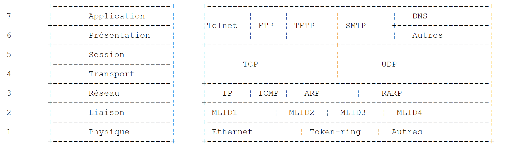
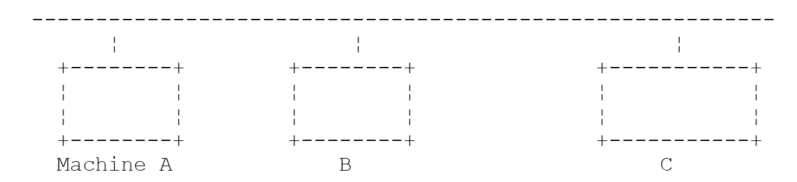
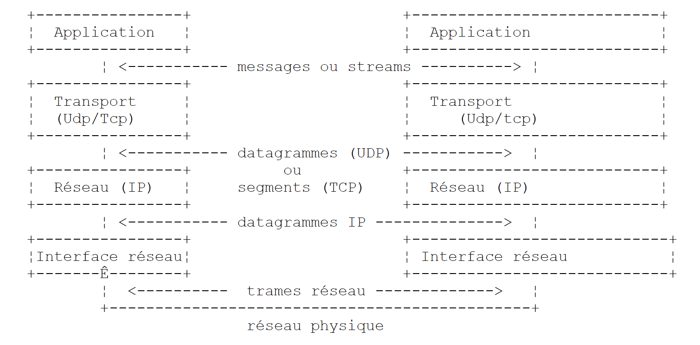
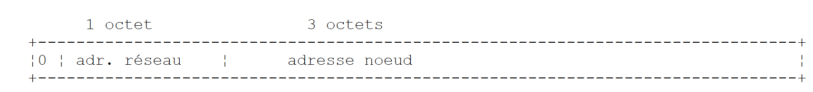
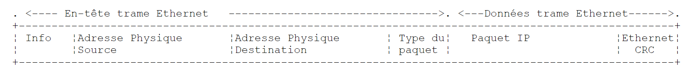
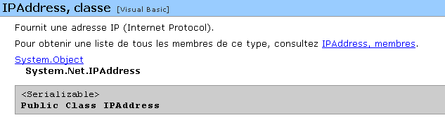

9. Programmation TCP-IP
9.1. Généralités
9.1.1. Les protocoles de l'Internet
Nous donnons ici une introduction aux protocoles de communication de l'Internet, appelés aussi suite de protocoles TCP/IP (Transfer Control Protocol / Internet Protocol), du nom des deux principaux protocoles. Il est bon que le lecteur ait une compréhension globale du fonctionnement des réseaux et notamment des protocoles TCP/IP avant d'aborder la construction d'applications distribuées.
Le texte qui suit est une traduction partielle d'un texte que l'on trouve dans le document "Lan Workplace for Dos - Administrator's Guide" de NOVELL, document du début des années 90.
Le concept général de créer un réseau d'ordinateurs hétérogènes vient de recherches effectuées par le DARPA (Defense Advanced Research Projects Agency) aux Etats-Unis. Le DARPA a développé la suite de protocoles connue sous le nom de TCP/IP qui permet à des machines hétérogènes de communiquer entre elles. Ces protocoles ont été testés sur un réseau appelé ARPAnet, réseau qui devint ultérieurement le réseau INTERNET. Les protocoles TCP/IP définissent des formats et des règles de transmission et de réception indépendants de l'organisation des réseaux et des matériels utilisés.
Le réseau conçu par le DARPA et géré par les protocoles TCP/IP est un réseau à commutation de paquets. Un tel réseau transmet l'information sur le réseau, en petits morceaux appelés paquets. Ainsi, si un ordinateur transmet un gros fichier, ce dernier sera découpé en petits morceaux qui seront envoyés sur le réseau pour être recomposés à destination. TCP/IP définit le format de ces paquets, à savoir :
- origine du paquet
- destination
- longueur
- type
9.1.2. Le modèle OSI
Les protocoles TCP/IP suivent à peu près le modèle de réseau ouvert appelé OSI (Open Systems Interconnection Reference Model) défini par l'ISO (International Standards Organisation). Ce modèle décrit un réseau idéal où la communication entre machines peut être représentée par un modèle à sept couches :
 |
Chaque couche reçoit des services de la couche inférieure et offre les siens à la couche supérieure. Supposons que deux applications situées sur des machines A et B différentes veulent communiquer : elles le font au niveau de la couche Application. Elles n'ont pas besoin de connaître tous les détails du fonctionnement du réseau : chaque application remet l'information qu'elle souhaite transmettre à la couche du dessous : la couche Présentation. L'application n'a donc à connaître que les règles d'interfaçage avec la couche Présentation.
Une fois l'information dans la couche Présentation, elle est passée selon d'autres règles à la couche Session et ainsi de suite, jusqu'à ce que l'information arrive sur le support physique et soit transmise physiquement à la machine destination. Là, elle subira le traitement inverse de celui qu'elle a subi sur la machine expéditeur.
A chaque couche, le processus expéditeur chargé d'envoyer l'information, l'envoie à un processus récepteur sur l'autre machine apartenant à la même couche que lui. Il le fait selon certaines règles que l'on appelle le protocole de la couche. On a donc le schéma de communication final suivant :
 |
Le rôle des différentes couches est le suivant :
Assure la transmission de bits sur un support physique. On trouve dans cette couche des équipements terminaux de traitement des données (E.T.T.D.) tels que terminal ou ordinateur, ainsi que des équipements de terminaison de circuits de données (E.T.C.D.) tels que modulateur/démodulateur, multiplexeur, concentrateur. Les points d'intérêt à ce niveau sont : . le choix du codage de l'information (analogique ou numérique) . le choix du mode de transmission (synchrone ou asynchrone). | |
Masque les particularités physiques de la couche Physique. Détecte et corrige les erreurs de transmission. | |
Gère le chemin que doivent suivre les informations envoyées sur le réseau. On appelle cela le routage : déterminer la route à suivre par une information pour qu'elle arrive à son destinataire. | |
Permet la communication entre deux applications alors que les couches précédentes ne permettaient que la communication entre machines. Un service fourni par cette couche peut être le multiplexage : la couche transport pourra utiliser une même connexion réseau (de machine à machine) pour transmettre des informations appartenant à plusieurs applications. | |
On va trouver dans cette couche des services permettant à une application d'ouvrir et de maintenir une session de travail sur une machine distante. | |
Elle vise à uniformiser la représentation des données sur les différentes machines. Ainsi des données provenant d'une machine A, vont être "habillées" par la couche Présentation de la machine A, selon un format standard avant d'être envoyées sur le réseau. Parvenues à la couche Présentation de la machine destinatrice B qui les reconnaîtra grâce à leur format standard, elles seront habillées d'une autre façon afin que l'application de la machine B les reconnaisse. | |
A ce niveau, on trouve les applications généralement proches de l'utilisateur telles que la messagerie électronique ou le transfert de fichiers. |
9.1.3. Le modèle TCP/IP
Le modèle OSI est un modèle idéal encore jamais réalisé. La suite de protocoles TCP/IP s'en approche sous la forme suivante :
 |
Couche Physique
En réseau local, on trouve généralement une technologie Ethernet ou Token-Ring. Nous ne présentons ici que la technologie Ethernet.
Ethernet
C'est le nom donné à une technologie de réseaux locaux à commutation de paquets inventée à PARC Xerox au début des années 1970 et normalisée par Xerox, Intel et Digital Equipment en 1978. Le réseau est physiquement constitué d'un câble coaxial d'environ 1,27 cm de diamètre et d'une longueur de 500 m au plus. Il peut être étendu au moyen de répéteurs, deux machines ne pouvant être séparées par plus de deux répéteurs. Le câble est passif : tous les éléments actifs sont sur les machines raccordées au câble. Chaque machine est reliée au câble par une carte d'accès au réseau comprenant :
- un transmetteur (transceiver) qui détecte la présence de signaux sur le câble et convertit les signaux analogiques en signaux numérique et inversement.
- un coupleur qui reçoit les signaux numériques du transmetteur et les transmet à l'ordinateur pour traitement ou inversement.
Les caractéristiques principales de la technologie Ethernet sont les suivantes :
- Capacité de 10 Mégabits/seconde.
- Topologie en bus : toutes les machines sont raccordées au même câble
 |
- Réseau diffusant - Une machine qui émet transfère des informations sur le câble avec l'adresse de la machine destinatrice. Toutes les machines raccordées reçoivent alors ces informations et seule celle à qui elles sont destinées les conserve.
- La méthode d'accès est la suivante : le transmetteur désirant émettre écoute le câble - il détecte alors la présence ou non d'une onde porteuse, présence qui signifierait qu'une transmission est en cours. C'est la technique CSMA (Carrier Sense Multiple Access). En l'absence de porteuse, un transmetteur peut décider de transmettre à son tour. Ils peuvent être plusieurs à prendre cette décision. Les signaux émis se mélangent : on dit qu'il y a collision. Le transmetteur détecte cette situation : en même temps qu'il émet sur le câble, il écoute ce qui passe réellement sur celui-ci. S'il détecte que l'information transitant sur le câble n'est pas celle qu'il a émise, il en déduit qu'il y a collision et il s'arrêtera d'émettre. Les autres transmetteurs qui émettaient feront de même. Chacun reprendra son émission après un temps aléatoire dépendant de chaque transmetteur. Cette technique est appelée CD (Collision Detect). La méthode d'accès est ainsi appelée CSMA/CD.
- un adressage sur 48 bits. Chaque machine a une adresse, appelée ici adresse physique, qui est inscrite sur la carte qui la relie au câble. On appelle cet adresse, l'adresse Ethernet de la machine.
Couche Réseau
Nous trouvons au niveau de cette couche, les protocoles IP, ICMP, ARP et RARP.
Délivre des paquets entre deux noeuds du réseau | |
ICMP réalise la communication entre le programme du protocole IP d'une machine et celui d'une autre machine. C'est donc un protocole d'échange de messages à l'intérieur même du protocole IP. | |
fait la correspondance adresse Internet machine--> adresse physique machine | |
fait la correspondance adresse physique machine--> adresse Internet machine |
Couches Transport/Session
Dans cette couche, on trouve les protocoles suivants :
Assure une remise fiable d'informations entre deux clients | |
Assure une remise non fiable d'informations entre deux clients |
Couches Application/Présentation/Session
On trouve ici divers protocoles :
Emulateur de terminal permettant à une machine A de se connecter à une machine B en tant que terminal | |
permet des transferts de fichiers | |
permet des transferts de fichiers | |
permet l'échange de messages entre utilisateurs du réseau | |
transforme un nom de machine en adresse Internet de la machine | |
créé par sun MicroSystems, il spécifie une représentation standard des données, indépendante des machines | |
défini également par Sun, c'est un protocole de communication entre applications distantes, indépendant de la couche transport. Ce protocole est important : il décharge le programmeur de la connaissance des détails de la couche transport et rend les applications portables. Ce protocole s'appuie sur sur le protocole XDR | |
toujours défini par Sun, ce protocole permet à une machine, de "voir" le système de fichiers d'une autre machine. Il s'appuie sur le protocole RPC précédent |
9.1.4. Fonctionnement des protocoles de l'Internet
Les applications développées dans l'environnement TCP/IP utilisent généralement plusieurs des protocoles de cet environnement. Un programme d'application communique avec la couche la plus élevée des protocoles. Celle-ci passe l'information à la couche du dessous et ainsi de suite jusqu'à arriver sur le support physique. Là, l'information est physiquement transférée à la machine destinatrice où elle retraversera les mêmes couches, en sens inverse cette fois-ci, jusqu'à arriver à l'application destinatrice des informations envoyées. Le schéma suivant montre le parcours de l'information :
 |
Prenons un exemple : l'application FTP, définie au niveau de la couche Application et qui permet des transferts de fichiers entre machines.
- L'application délivre une suite d'octets à transmettre à la couche transport.
- La couche transport découpe cette suite d'octets en segments TCP, et ajoute au début de chaque segment, le numéro de celui-ci. Les segments sont passés à la couche Réseau gouvernée par le protocole IP.
- La couche IP crée un paquet encapsulant le segment TCP reçu. En tête de ce paquet, elle place les adresses Internet des machines source et destination. Elle détermine également l'adresse physique de la machine destinatrice. Le tout est passé à la couche Liaison de données & Liaison physique, c'est à dire à la carte réseau qui couple la machine au réseau physique.
- Là, le paquet IP est encapsulé à son tour dans une trame physique et envoyé à son destinataire sur le câble.
- Sur la machine destinatrice, la couche Liaison de données & Liaison physique fait l'inverse : elle désencapsule le paquet IP de la trame physique et le passe à la couche IP.
- La couche IP vérifie que le paquet est correct : elle calcule une somme, fonction des bits reçus (checksum), somme qu'elle doit retrouver dans l'en-tête du paquet. Si ce n'est pas le cas, celui-ci est rejeté.
- Si le paquet est déclaré correct, la couche IP désencapsule le segment TCP qui s'y trouve et le passe au-dessus à la couche transport.
- La couche transport, couche TCP dans notre exemple, examine le numéro du segment afin de restituer le bon ordre des segments.
- Elle calcule également une somme de vérification pour le segment TCP. S'il est trouvé correct, la couche TCP envoie un accusé de réception à la machine source, sinon le segment TCP est refusé.
- Il ne reste plus à la couche TCP qu'à transmettre la partie données du segment à l'application destinatrice de celles-ci dans la couche du dessus.
9.1.5. L'adressage dans l'Internet
Un noeud d'un réseau peut être un ordinateur, une imprimante intelligente, un serveur de fichiers, n'importe quoi en fait pouvant communiquer à l'aide des protocoles TCP/IP. Chaque noeud a une adresse physique ayant un format dépendant du type du réseau. Sur un réseau Ethernet, l'adresse physique est codée sur 6 octets. Une adresse d'un réseau X25 est un nombre à 14 chiffres.
L'adresse Internet d'un noeud est une adresse logique : elle est indépendante du matériel et du réseau utilisé. C'est une adresse sur 4 octets identifiant à la fois un réseau local et un noeud de ce réseau. L'adresse Internet est habituellement représentée sous la forme de 4 nombres, valeurs des 4 octets, séparés par un point. Ainsi l'adresse de la machine Lagaffe de la faculté des Sciences d'Angers est notée 193.49.144.1 et celle de la machine Liny 193.49.144.9. On en déduira que l'adresse Internet du réseau local est 193.49.144.0. On pourra avoir jusqu'à 254 noeuds sur ce réseau.
Parce que les adresses Internet ou adresses IP sont indépendantes du réseau, une machine d'un réseau A peut communiquer avec une machine d'un réseau B sans se préoccuper du type de réseau sur lequel elle se trouve : il suffit qu'elle connaisse son adresse IP. Le protocole IP de chaque réseau se charge de faire la conversion adresse IP <--> adresse physique, dans les deux sens.
Les adresses IP doivent être toutes différentes. En France, c'est l'INRIA qui s'occupe d'affecter les adresses IP. En fait, cet organisme délivre une adresse pour votre réseau local, par exemple 193.49.144.0 pour le réseau de la faculté des sciences d'Angers. L'administrateur de ce réseau peut ensuite affecter les adresses IP 193.49.144.1 à 193.49.144.254 comme il l'entend. Cette adresse est généralement inscrite dans un fichier particulier de chaque machine reliée au réseau.
9.1.5.1. Les classes d'adresses IP
Une adresse IP est une suite de 4 octets notée souvent I1.I2.I3.I4, qui contient en fait deux adresses :
- l'adresse du réseau
- l'adresse d'un noeud de ce réseau
Selon la taille de ces deux champs, les adresses IP sont divisées en 3 classes : classes A, B et C.
Classe A
L'adresse IP : I1.I2.I3.I4 a la forme R1.N1.N2.N3 où
R1 | est l'adresse du réseau |
N1.N2.N3 | est l'adresse d'une machine dans ce réseau |
Plus exactement, la forme d'une adresse IP de classe A est la suivante :
 |
L'adresse réseau est sur 7 bits et l'adresse du noeud sur 24 bits. On peut donc avoir 127 réseaux de classe A, chacun comportant jusqu'à 224 noeuds.
Classe B
Ici, l'adresse IP : I1.I2.I3.I4 a la forme R1.R2.N1.N2 où
R1.R2 | est l'adresse du réseau |
N1.N2 | est l'adresse d'une machine dans ce réseau |
Plus exactement, la forme d'une adresse IP de classe B est la suivante :
 |
L'adresse du réseau est sur 2 octets (14 bits exactement) ainsi que celle du noeud. On peut donc avoir 214 réseaux de classe B chacun comportant jusqu'à 216 noeuds.
Classe C
Dans cette classe, l'adresse IP : I1.I2.I3.I4 a la forme R1.R2.R3.N1 où
R1.R2.R3 | est l'adresse du réseau |
N1 | est l'adresse d'une machine dans ce réseau |
Plus exactement, la forme d'une adresse IP de classe C est la suivante :
 |
L'adresse réseau est sur 3 octets (moins 3 bits) et l'adresse du noeud sur 1 octet. On peut donc avoir 221 réseaux de classe C comportant jusqu'à 256 noeuds.
L'adresse de la machine Lagaffe de la faculté des sciences d'Angers étant 193.49.144.1, on voit que l'octet de poids fort vaut 193, c'est à dire en binaire 11000001. On en déduit que le réseau est de classe C.
Adresses réservées
- Certaines adresses IP sont des adresses de réseaux plutôt que des adresses de noeuds dans le réseau. Ce sont celles, où l'adresse du noeud est mise à 0. Ainsi, l'adresse 193.49.144.0 est l'adresse IP du réseau de la Faculté des Sciences d'Angers. En conséquence, aucun noeud d'un réseau ne peut avoir l'adresse zéro.
- Lorsque dans une adresse IP, l'adresse du noeud ne comporte que des 1, on a alors une adresse de diffusion : cette adresse désigne tous les noeuds du réseau.
- Dans un réseau de classe C, permettant théoriquement 28=256 noeuds, si on enlève les deux adresses interdites, on n'a plus que 254 adresses autorisées.
9.1.5.2. Les protocoles de conversion Adresse Internet <--> Adresse physique
Nous avons vu que lors d'une émission d'informations d'une machine vers une autre, celles-ci à la traversée de la couche IP étaient encapsulées dans des paquets. Ceux-ci ont la forme suivante :
 |
Le paquet IP contient donc les adresses Internet des machines source et destination. Lorsque ce paquet va être transmis à la couche chargée de l'envoyer sur le réseau physique, d'autres informations lui sont ajoutées pour former la trame physique qui sera finalement envoyée sur le réseau. Par exemple, le format d'une trame sur un réseau Ethernet est le suivant :
 |
Dans la trame finale, il y a l'adresse physique des machines source et destination. Comment sont-elles obtenues ?
La machine expéditrice connaissant l'adresse IP de la machine avec qui elle veut communiquer obtient l'adresse physique de celle-ci en utilisant un protocole particulier appelé ARP (Address Resolution Protocol).
- Elle envoie un paquet d'un type spécial appelé paquet ARP contenant l'adresse IP de la machine dont on cherche l'adresse physique. Elle a pris soin également d'y placer sa propre adresse IP ainsi que son adresse physique.
- Ce paquet est envoyé à tous les noeuds du réseau.
- Ceux-ci reconnaissent la nature spéciale du paquet. Le noeud qui reconnaît son adresse IP dans le paquet, répond en envoyant à l'expéditeur du paquet son adresse physique. Comment le peut-il ? Il a trouvé dans le paquet les adresses IP et physique de l'expéditeur.
- L'expéditeur reçoit donc l'adresse physique qu'il cherchait. Il la stocke en mémoire afin de pouvoir l'utiliser ultérieurement si d'autres paquets sont à envoyer au même destinataire.
L'adresse IP d'une machine est normalement inscrite dans l'un de ses fichiers qu'elle peut donc consulter pour la connaître. Cette adresse peut être changée : il suffit d'éditer le fichier. L'adresse physique elle, est inscrite dans une mémoire de la carte réseau et ne peut être changée.
Lorsqu'un administrateur désire d'organiser son réseau différemment, il peut être amené à changer les adresses IP de tous les noeuds et donc à éditer les différents fichiers de configuration des différents noeuds. Cela peut être fastidieux et une occasion d'erreurs s'il y a beaucoup de machines. Une méthode consiste à ne pas affecter d'adresse IP aux machines : on inscrit alors un code spécial dans le fichier dans lequel la machine devrait trouver son adresse IP. Découvrant qu'elle n'a pas d'adresse IP, la machine la demande selon un protocole appelé RARP (Reverse Address Resolution Protocol). Elle envoie alors sur un réseau un paquet spécial appelé paquet RARP, analogue au paquet ARP précédent, dans lequel elle met son adresse physique. Ce paquet est envoyé à tous les noeuds qui reconnaissent alors un paquet RARP. L'un d'entre-eux, appelé serveur RARP, possède un fichier donnant la correspondance adresse physique <--> adresse IP de tous les noeuds. Il répond alors à l'expéditeur du paquet RARP, en lui renvoyant son adresse IP. Un administrateur désirant reconfigurer son réseau, n'a donc qu'à éditer le fichier de correspondances du serveur RARP. Celui-ci doit normalement avoir une adresse IP fixe qu'il doit pouvoir connaître sans avoir à utiliser lui-même le protocole RARP.
9.1.6. La couche réseau dite couche IP de l'internet
Le protocole IP (Internet Protocol) définit la forme que les paquets doivent prendre et la façon dont ils doivent être gérés lors de leur émission ou de leur réception. Ce type de paquet particulier est appelé un datagramme IP. Nous l'avons déjà présenté :
 |
L'important est qu'outre les données à transmettre, le datagramme IP contient les adresses Internet des machines source et destination. Ainsi la machine destinatrice sait qui lui envoie un message.
A la différence d'une trame de réseau qui a une longueur déterminée par les caractéristiques physiques du réseau sur lequel elle transite, la longueur du datagramme IP est elle fixée par le logiciel et sera donc la même sur différents réseaux physiques. Nous avons vu qu'en descendant de la couche réseau dans la couche physique le datagramme IP était encapsulé dans une trame physique. Nous avons donné l'exemple de la trame physique d'un réseau Ethernet :
 |
Les trames physiques circulent de noeud en noeud vers leur destination qui peut ne pas être sur le même réseau physique que la machine expéditrice. Le paquet IP peut donc être encapsulé successivement dans des trames physiques différentes au niveau des noeuds qui font la jonction entre deux réseaux de type différent. Il se peut aussi que le paquet IP soit trop grand pour être encapsulé dans une trame physique. Le logiciel IP du noeud où se pose ce problème, décompose alors le paquet IP en fragments selon des règles précises, chacun d'eux étant ensuite envoyé sur le réseau physique. Ils ne seront réassemblés qu'à leur ultime destination.
9.1.6.1. Le routage
Le routage est la méthode d'acheminement des paquets IP à leur destination. Il y a deux méthodes : le routage direct et le routage indirect.
Routage direct
Le routage direct désigne l'acheminement d'un paquet IP directement de l'expéditeur au destinataire à l'intérieur du même réseau :
- La machine expéditrice d'un datagramme IP a l'adresse IP du destinataire.
- Elle obtient l'adresse physique de ce dernier par le protocole ARP ou dans ses tables, si cette adresse a déjà été obtenue.
- Elle envoie le paquet sur le réseau à cette adresse physique.
Routage indirect
Le routage indirect désigne l'acheminement d'un paquet IP à une destination se trouvant sur un autre réseau que celui auquel appartient l'expéditeur. Dans ce cas, les parties adresse réseau des adresses IP des machines source et destination sont différentes. La machine source reconnaît ce point. Elle envoie alors le paquet à un noeud spécial appelé routeur (router), noeud qui connecte un réseau local aux autres réseaux et dont elle trouve l'adresse IP dans ses tables, adresse obtenue initialement soit dans un fichier soit dans une mémoire permanente ou encore via des informations circulant sur le réseau.
Un routeur est attaché à deux réseaux et possède une adresse IP à l'intérieur de ces deux réseaux.
 |
Dans notre exemple ci-dessus :
- Le réseau n° 1 a l'adresse Internet 193.49.144.0 et le réseau n° 2 l'adresse 193.49.145.0.
- A l'intérieur du réseau n° 1, le routeur a l'adresse 193.49.144.6 et l'adresse 193.49.145.3 à l'intérieur du réseau n° 2.
Le routeur a pour rôle de mettre le paquet IP qu'il reçoit et qui est contenu dans une trame physique typique du réseau n° 1, dans une trame physique pouvant circuler sur le réseau n° 2. Si l'adresse IP du destinataire du paquet est dans le réseau n° 2, le routeur lui enverra le paquet directement sinon il l'enverra à un autre routeur, connectant le réseau n° 2 à un réseau n° 3 et ainsi de suite.
9.1.6.2. Messages d'erreur et de contrôle
Toujours dans la couche réseau, au même niveau donc que le protocole IP, existe le protocole ICMP (Internet Control Message Protocol). Il sert à envoyer des messages sur le fonctionnement interne du réseau : noeuds en panne, embouteillage à un routeur, etc ... Les messages ICMP sont encapsulés dans des paquets IP et envoyés sur le réseau. Les couches IP des différents noeuds prennent les actions appropriées selon les messages ICMP qu'elles reçoivent. Ainsi, une application elle-même, ne voit jamais ces problèmes propres au réseau. Un noeud utilisera les informations ICMP pour mettre à jour ses tables de routage.
9.1.7. La couche transport : les protocoles UDP et TCP
9.1.7.1. Le protocole UDP : User Datagram Protocol
Le protocole UDP permet un échange non fiable de données entre deux points, c'est à dire que le bon acheminement d'un paquet à sa destination n'est pas garanti. L'application, si elle le souhaite peut gérer cela elle-même, en attendant par exemple après l'envoi d'un message, un accusé de réception, avant d'envoyer le suivant.
Pour l'instant, au niveau réseau, nous avons parlé d'adresses IP de machines. Or sur une machine, peuvent coexister en même temps différents processus qui tous peuvent communiquer. Il faut donc indiquer, lors de l'envoi d'un message, non seulement l'adresse IP de la machine destinatrice, mais également le "nom" du processus destinataire. Ce nom est en fait un numéro, appelé numéro de port. Certains numéros sont réservés à des applications standard : port 69 pour l'application tftp (trivial file transfer protocol) par exemple. Les paquets gérés par le protocole UDP sont appelés également des datagrammes. Ils ont la forme suivante :
 |
Ces datagrammes seront encapsulés dans des paquets IP, puis dans des trames physiques.
9.1.7.2. Le protocole TCP : Transfer Control Protocol
Pour des communications sûres, le protocole UDP est insuffisant : le développeur d'applications doit élaborer lui-même un protocole lui permettant de détecter le bon acheminement des paquets.
Le protocole TCP (Transfer Control Protocol) évite ces problèmes. Ses caractéristiques sont les suivantes :
- Le processus qui souhaite émettre établit tout d'abord une connexion avec le processus destinataire des informations qu'il va émettre. Cette connexion se fait entre un port de la machine émettrice et un port de la machine réceptrice. Il y a entre les deux ports un chemin virtuel qui est ainsi créé et qui sera réservé aux deux seuls processus ayant réalisé la connexion.
- Tous les paquets émis par le processus source suivent ce chemin virtuel et arrivent dans l'ordre où ils ont été émis ce qui n'était pas garanti dans le protocole UDP puisque les paquets pouvaient suivre des chemins différents.
- L'information émise a un aspect continu. Le processus émetteur envoie des informations à son rhythme. Celles-ci ne sont pas nécessairement envoyées tout de suite : le protocole TCP attend d'en avoir assez pour les envoyer. Elles sont stockées dans une structure appelée segment TCP. Ce segment une fois rempli sera transmis à la couche IP où il sera encapsulé dans un paquet IP.
- Chaque segment envoyé par le protocole TCP est numéroté. Le protocole TCP destinataire vérifie qu'il reçoit bien les segments en séquence. Pour chaque segment correctement reçu, il envoie un accusé de réception à l'expéditeur.
- Lorsque ce dernier le reçoit, il l'indique au processus émetteur. Celui-ci peut donc savoir qu'un segment est arrivé à bon port, ce qui n'était pas possible avec le protocole UDP.
- Si au bout d'un certain temps, le protocole TCP ayant émis un segment ne reçoit pas d'accusé de réception, il retransmet le segment en question, garantissant ainsi la qualité du service d'acheminement de l'information.
- Le circuit virtuel établi entre les deux processus qui communiquent est full-duplex : cela signifie que l'information peut transiter dans les deux sens. Ainsi le processus destination peut envoyer des accusés de réception alors même que le processus source continue d'envoyer des informations. Cela permet par exemple au protocole TCP source d'envoyer plusieurs segments sans attendre d'accusé de réception. S'il réalise au bout d'un certain temps qu'il n'a pas reçu l'accusé de réception d'un certain segment n° n, il reprendra l'émission des segments à ce point.
9.1.8. La couche Applications
Au-dessus des protocoles UDP et TCP, existent divers protocoles standard :
TELNET
Ce protocole permet à un utilisateur d'une machine A du réseau de se connecter sur une machine B (appelée souvent machine hôte). TELNET émule sur la machine A un terminal dit universel. L'utilisateur se comporte donc comme s'il disposait d'un terminal connecté à la machine B. Telnet s'appuie sur le protocole TCP.
FTP : (File Transfer protocol)
Ce protocole permet l'échange de fichiers entre deux machines distantes ainsi que des manipulations de fichiers tels que des créations de répertoire par exemple. Il s'appuie sur le protocole TCP.
TFTP: (Trivial File Transfer Control)
Ce protocole est une variante de FTP. Il s'appuie sur le protocole UDP et est moins sophistiqué que FTP.
DNS : (Domain Name System)
Lorsqu'un utilisateur désire échanger des fichiers avec une machine distante, par FTP par exemple, il doit connaître l'adresse Internet de cette machine. Par exemple, pour faire du FTP sur la machine Lagaffe de l'université d'Angers, il faudrait lancer FTP comme suit : FTP 193.49.144.1
Cela oblige à avoir un annuaire faisant la correspondance machine <--> adresse IP. Probablement que dans cet annuaire les machines seraient désignées par des noms symboliques tels que :
machine DPX2/320 de l'université d'Angers
machine Sun de l'ISERPA d'Angers
On voit bien qu'il serait plus agréable de désigner une machine par un nom plutôt que par son adresse IP. Se pose alors le problème de l'unicité du nom : il y a des millions de machines interconnectées. On pourrait imaginer qu'un organisme centralisé attribue les noms. Ce serait sans doute assez lourd. Le contrôle des noms a été en fait distribué dans des domaines. Chaque domaine est géré par un organisme généralement très léger qui a toute liberté quant au choix des noms de machines. Ainsi les machines en France appartiennent au domaine fr, domaine géré par l'Inria de Paris. Pour continuer à simplifier les choses, on distribue encore le contrôle : des domaines sont créés à l'intérieur du domaine fr. Ainsi l'université d'Angers appartient au domaine univ-Angers. Le service gérant ce domaine a toute liberté pour nommer les machines du réseau de l'Université d'Angers. Pour l'instant ce domaine n'a pas été subdivisé. Mais dans une grande université comportant beaucoup de machines en réseau, il pourrait l'être.
La machine DPX2/320 de l'université d'Angers a été nommée Lagaffe alors qu'un PC 486DX50 a été nommé liny. Comment référencer ces machines de l'extérieur ? En précisant la hiérarchie des domaines auxquelles elles appartiennent. Ainsi le nom complet de la machine Lagaffe sera :
Lagaffe.univ-Angers.fr
A l'intérieur des domaines, on peut utiliser des noms relatifs. Ainsi à l'intérieur du domaine fr et en dehors du domaine univ-Angers, la machine Lagaffe pourra être référencée par
Lagaffe.univ-Angers
Enfin, à l'intérieur du domaine univ-Angers, elle pourra être référencée simplement par
Lagaffe
Une application peut donc référencer une machine par son nom. Au bout du compte, il faut quand même obtenir l'adresse Internet de cette machine. Comment cela est-il réalisé ? Suposons que d'une machine A, on veuille communiquer avec une machine B.
- si la machine B appartient au même domaine que la machine A, on trouvera probablement son adresse IP dans un fichier de la machine A.
- sinon, la machine A trouvera dans un autre fichier ou le même que précédemment, une liste de quelques serveurs de noms avec leurs adresses IP. Un serveur de noms est chargé de faire la correspondance entre un nom de machine et son adresse IP. La machine A va envoyer une requête spéciale au premier serveur de nom de sa liste, appelé requête DNS incluant donc le nom de la machine recherchée. Si le serveur interrogé a ce nom dans ses tablettes, il enverra à la machine A, l'adresse IP correspondante. Sinon, le serveur trouvera lui aussi dans ses fichiers, une liste de serveurs de noms qu'il peut interroger. Il le fera alors. Ainsi un certain nombre de serveurs de noms vont être interrogés, pas de façon anarchique mais d'une façon à minimiser les requêtes. Si la machine est finalement trouvée, la réponse redescendra jusqu'à la machine A.
XDR : (eXternal Data Representation)
Créé par Sun MicroSystems, ce protocole spécifie une représentation standard des données, indépendante des machines.
RPC : (Remote Procedure Call)
Défini également par Sun, c'est un protocole de communication entre applications distantes, indépendant de la couche transport. Ce protocole est important : il décharge le programmeur de la connaissance des détails de la couche transport et rend les applications portables. Ce protocole s'appuie sur sur le protocole XDR
NFS : Network File System
Toujours défini par Sun, ce protocole permet à une machine, de "voir" le système de fichiers d'une autre machine. Il s'appuie sur le protocole RPC précédent.
9.1.9. Conclusion
Nous avons présenté dans cette introduction quelques grandes lignes des protocoles Internet. Pour approfondir ce domaine, on pourra lire l'excellent livre de Douglas Comer :
Titre | TCP/IP : Architecture, Protocoles, Applications. |
Auteur | Douglas COMER |
Editeur | InterEditions |
9.2. Gestion des adresses réseau
Une machine sur le réseau Internet est définie de façon unique par une adresse IP (Internet Protocol) de la forme I1.I2.I3.I4 où In est un nombre entre 1 et 254. Elle peut être également définie par un nom également unique. Ce nom n'est pas obligatoire, les applications utilisant toujours au final les adresses IP des machines. lls sont là pour faciliter la vie des utilisateurs. Ainsi il est plus facile, avec un navigateur, de demander l'URL http://www.ibm.com que l'URL http://129.42.17.99 bien que les deux méthodes soient possibles. L'association adresse IP <--> nomMachine est assurée par un service distribué de l'internet appelé DNS (Domain Name System). La plate-forme .NET offre la classe Dns pour gérer les adresses internet :

La plupart des méthodes de la classe sont statiques. Regardons celles qui nous intéressent :
rend une adresse IPHostEntry à partir d'une adresse IP sous la forme "I1.I2.I3.I4". Lance une exception si la machine address ne peut être trouvée. | |
rend une adresse IPHostEntry à partir d'un nom de machine. Lance une exception si la machine name ne peut être trouvée. | |
rend le nom de la machine sur laquelle s'exécute le programme qui joue cette instruction |
Les adresses réseau de type IPHostEntry ont la forme suivante :
 |
Les propriétés qui nous intéressent :
liste des adresses IP d'une machine. Si une adresse IP désigne une et une seule machine physique, une machine physique peut elle avoir plusieurs adresses IP. Ce sera le cas si elle a plusieurs cartes réseau qui la connectent à des réseaux différents. | |
liste des alias d'une machine, pouvant être désignée par un nom principal et des alias | |
le nom de la machine si elle en a un |
De la classe IPAddress nous retiendrons le constructeur, les propriétés et méthodes suivantes :

Un objet [IPAddress] peut être transformé en chaîne I1.I2.I3.I4 avec la méthode ToString(). Inversement, on peut obtenir un objet IPAddress à partir d'une chaîne I1.I2.I3.I4 avec la méthode statique IPAddress.Parse("I1.I2.I3.I4"). Considérons le programme suivant qui affiche le nom de la machine sur laquelle il s'exécute puis de façon interactive donne les correspondances adresse IP <--> nom Machine :
dos>address1
Machine Locale=tahe
Machine recherchée (fin pour arrêter) : istia.univ-angers.fr
Machine : istia.univ-angers.fr
Adresses IP : 193.49.146.171
Machine recherchée (fin pour arrêter) : 193.49.146.171
Machine : istia.istia.univ-angers.fr
Adresses IP : 193.49.146.171
Alias : 171.146.49.193.in-addr.arpa
Machine recherchée (fin pour arrêter) : www.ibm.com
Machine : www.ibm.com
Adresses IP : 129.42.17.99,129.42.18.99,129.42.19.99,129.42.16.99
Machine recherchée (fin pour arrêter) : 129.42.17.99
Machine : www.ibm.com
Adresses IP : 129.42.17.99
Machine recherchée (fin pour arrêter) : x.y.z
Impossible de trouver la machine [x.y.z]
Machine recherchée (fin pour arrêter) : localhost
Machine : tahe
Adresses IP : 127.0.0.1
Machine recherchée (fin pour arrêter) : 127.0.0.1
Machine : tahe
Adresses IP : 127.0.0.1
Machine recherchée (fin pour arrêter) : tahe
Machine : tahe
Adresses IP : 127.0.0.1
Machine recherchée (fin pour arrêter) : fin
Le programme est le suivant :
' options
Option Explicit On
Option Strict On
' espaces de noms
Imports System
Imports System.Net
Imports System.Text.RegularExpressions
' module de test
Public Module adresses
Sub Main()
' affiche le nom de la machine locale
' puis donne interactivement des infos sur les machines réseau
' identifiées par un nom ou une adresse IP
' machine locale
Dim localHost As String = Dns.GetHostName()
Console.Out.WriteLine(("Machine Locale=" + localHost))
' question-réponses interactives
Dim machine As String
Dim adresseMachine As IPHostEntry
While True
' saisie du nom de la machine recherchée
Console.Out.Write("Machine recherchée (fin pour arrêter) : ")
machine = Console.In.ReadLine().Trim().ToLower()
' fini ?
If machine = "fin" Then
Exit While
End If
' adresse I1.I2.I3.I4 ou nom de machine ?
Dim isIPV4 As Boolean = Regex.IsMatch(machine, "^\s*\d{1,3}\.\d{1,3}\.\d{1,3}\.\d{1,3}\s*$")
' gestion exception
Try
If isIPV4 Then
adresseMachine = Dns.GetHostByAddress(machine)
Else
adresseMachine = Dns.GetHostByName(machine)
End If
' le nom
Console.Out.WriteLine(("Machine : " + adresseMachine.HostName))
' les adresses IP
Console.Out.Write(("Adresses IP : " + adresseMachine.AddressList(0).ToString))
Dim i As Integer
For i = 1 To adresseMachine.AddressList.Length - 1
Console.Out.Write(("," + adresseMachine.AddressList(i).ToString))
Next i
Console.Out.WriteLine()
' les alias
If adresseMachine.Aliases.Length <> 0 Then
Console.Out.Write(("Alias : " + adresseMachine.Aliases(0)))
For i = 1 To adresseMachine.Aliases.Length - 1
Console.Out.Write(("," + adresseMachine.Aliases(i)))
Next i
Console.Out.WriteLine()
End If
Catch
' la machine n'existe pas
Console.Out.WriteLine("Impossible de trouver la machine [" + machine + "]")
End Try
End While
End Sub
End Module
9.3. Programmation TCP-IP
9.3.1. Généralités
Considérons la communication entre deux machines distantes A et B :
 |
Lorsque une application AppA d'une machine A veut communiquer avec une application AppB d'une machine B de l'Internet, elle doit connaître plusieurs choses :
- l'adresse IP ou le nom de la machine B
- le numéro du port avec lequel travaille l'application AppB. En effet la machine B peut supporter de nombreuses applications qui travaillent sur l'Internet. Lorsqu'elle reçoit des informations provenant du réseau, elle doit savoir à quelle application sont destinées ces informations. Les applications de la machine B ont accès au réseau via des guichets appelés également des ports de communication. Cette information est contenue dans le paquet reçu par la machine B afin qu'il soit délivré à la bonne application.
- les protocoles de communication compris par la machine B. Dans notre étude, nous utiliserons uniquement les protocoles TCP-IP.
- le protocole de dialogue accepté par l'application AppB. En effet, les machines A et B vont se "parler". Ce qu'elles vont dire va être encapsulé dans les protocoles TCP-IP. Néanmoins, lorsqu'au bout de la chaîne, l'application AppB va recevoir l'information envoyée par l'applicaton AppA, il faut qu'elle soit capable de l'interpréter. Ceci est analogue à la situation où deux personnes A et B communiquent par téléphone : leur dialogue est transporté par le téléphone. La parole va être codée sous forme de signaux par le téléphone A, transportée par des lignes téléphoniques, arriver au téléphone B pour y être décodée. La personne B entend alors des paroles. C'est là qu'intervient la notion de protocole de dialogue : si A parle français et que B ne comprend pas cette langue, A et B ne pourront dialoguer utilement.
Aussi les deux applications communicantes doivent -elles être d'accord sur le type de dialogue qu'elles vont adopter. Par exemple, le dialogue avec un service ftp n'est pas le même qu'avec un service pop : ces deux services n'acceptent pas les mêmes commandes. Elles ont un protocole de dialogue différent.
9.3.2. Les caractéristiques du protocole TCP
Nous n'étudierons ici que des communications réseau utilisant le protocole de transport TCP. Rappelons ici, les caractéristiques de celui-ci :
- Le processus qui souhaite émettre établit tout d'abord une connexion avec le processus destinataire des informations qu'il va émettre. Cette connexion se fait entre un port de la machine émettrice et un port de la machine réceptrice. Il y a entre les deux ports un chemin virtuel qui est ainsi créé et qui sera réservé aux deux seuls processus ayant réalisé la connexion.
- Tous les paquets émis par le processus source suivent ce chemin virtuel et arrivent dans l'ordre où ils ont été émis
- L'information émise a un aspect continu. Le processus émetteur envoie des informations à son rythme. Celles-ci ne sont pas nécessairement envoyées tout de suite : le protocole TCP attend d'en avoir assez pour les envoyer. Elles sont stockées dans une structure appelée segment TCP. Ce segment une fois rempli sera transmis à la couche IP où il sera encapsulé dans un paquet IP.
- Chaque segment envoyé par le protocole TCP est numéroté. Le protocole TCP destinataire vérifie qu'il reçoit bien les segments en séquence. Pour chaque segment correctement reçu, il envoie un accusé de réception à l'expéditeur.
- Lorsque ce dernier le reçoit, il l'indique au processus émetteur. Celui-ci peut donc savoir qu'un segment est arrivé à bon port.
- Si au bout d'un certain temps, le protocole TCP ayant émis un segment ne reçoit pas d'accusé de réception, il retransmet le segment en question, garantissant ainsi la qualité du service d'acheminement de l'information.
- Le circuit virtuel établi entre les deux processus qui communiquent est full-duplex : cela signifie que l'information peut transiter dans les deux sens. Ainsi le processus destination peut envoyer des accusés de réception alors même que le processus source continue d'envoyer des informations. Cela permet par exemple au protocole TCP source d'envoyer plusieurs segments sans attendre d'accusé de réception. S'il réalise au bout d'un certain temps qu'il n'a pas reçu l'accusé de réception d'un certain segment n° n, il reprendra l'émission des segments à ce point.
9.3.3. La relation client-serveur
Souvent, la communication sur Internet est dissymétrique : la machine A initie une connexion pour demander un service à la machine B : il précise qu'il veut ouvrir une connexion avec le service SB1 de la machine B. Celle-ci accepte ou refuse. Si elle accepte, la machine A peut envoyer ses demandes au service SB1. Celles-ci doivent se conformer au protocole de dialogue compris par le service SB1. Un dialogue demande-réponse s'instaure ainsi entre la machine A qu'on appelle machine cliente et la machine B qu'on appelle machine serveur. L'un des deux partenaires fermera la connexion.
9.3.4. Architecture d'un client
L'architecture d'un programme réseau demandant les services d'une application serveur sera la suivante :
ouvrir la connexion avec le service SB1 de la machine B
si réussite alors
tant que ce n'est pas fini
préparer une demande
l'émettre vers la machine B
attendre et récupérer la réponse
la traiter
fin tant que
finsi
9.3.5. Architecture d'un serveur
L'architecture d'un programme offrant des services sera la suivante :
ouvrir le service sur la machine locale
tant que le service est ouvert
se mettre à l'écoute des demandes de connexion sur un port dit port d'écoute
lorsqu'il y a une demande, la faire traiter par une autre tâche sur un autre port dit port de service
fin tant que
Le programme serveur traite différemment la demande de connexion initiale d'un client de ses demandes ultérieures visant à obtenir un service. Le programme n'assure pas le service lui-même. S'il le faisait, pendant la durée du service il ne serait plus à l'écoute des demandes de connexion et des clients ne seraient alors pas servis. Il procède donc autrement : dès qu'une demande de connexion est reçue sur le port d'écoute puis acceptée, le serveur crée une tâche chargée de rendre le service demandé par le client. Ce service est rendu sur un autre port de la machine serveur appelé port de service. On peut ainsi servir plusieurs clients en même temps. Une tâche de service aura la structure suivante :
tant que le service n'a pas été rendu totalement
attendre une demande sur le port de service
lorsqu'il y en a une, élaborer la réponse
transmettre la réponse via le port de service
fin tant que
libérer le port de service
9.3.6. La classe TcpClient
La classe TcpClient est la classe qui convient pour représenter le client d'un service TCP. Elle est définie comme suit :

Les constructeurs, méthodes et propriétés qui nous intéressent sont les suivants :
crée une liaison tcp avec le serveur opérant sur le port indiqué (port) de la machine indiquée (hostname). Par exemple new TcpClient("istia.univ-angers.fr",80) pour se connecter au port 80 de la machine istia.univ-angers.fr | |
ferme la connexion au serveur Tcp | |
obtient un flux NetworkStream de lecture et d'écriture vers le serveur. C'est ce flux qui permet les échanges client-serveur. |
9.3.7. La classe NetworkStream
La classe NetworkStream représente le flux réseau entre le client et le serveur. La classe est définie comme suit :

La classe NetworkStream est dérivée de la classe Stream. Beaucoup d'applications client-serveur échangent des lignes de texte terminées par les caractères de fin de ligne "\r\n". Aussi il est intéressant d'utiliser des objets StreamReader et StreamWriter pour lire et écrire ces lignes dans le flux réseau. Lorsque deux machines communiquent, il y a à chaque bout de la liaison un objet TcpClient. La méthode GetStream de cet objet permet d'avoir accès au flux réseau (NetworkStream) qui lie les deux machines. Ainsi si une machine M1 a établi une liaison avec une machine M2 à l'aide d'un objet TcpClient client1 qu'elles échangent des lignes de texte, elle pourra créer ses flux de lecture et écriture de la façon suivante :
Dim in1 as StreamReader=new StreamReader(client1.GetStream())
Dim out1 as StreamWriter=new StreamWriter(client1.GetStream())
out1.AutoFlush=true
L'instruction
signifie que le flux d'écriture de client1 ne transitera pas par un buffer intermédiaire mais ira directement sur le réseau. Ce point est important. En général lorsque client1 envoie une ligne de texte à son partenaire il en attend une réponse. Celle-ci ne viendra jamais si la ligne a été en réalité bufferisée sur la machine M1 et jamais envoyée. Pour envoyer une ligne de texte à la machine M2, on écrira :
Pour lire la réponse de M2, on écrira :
9.3.8. Architecture de base d'un client internet
Nous avons maintenant les éléments pour écrire l'architecture de base d'un client internet :
Dim client As TcpClient = Nothing ' le client
Dim [IN] As StreamReader = Nothing ' le flux de lecture du client
Dim OUT As StreamWriter = Nothing ' le flux d'écriture du client
Dim demande As String = Nothing ' demande du client
Dim réponse As String = Nothing ' réponse du serveur
Try
' on se connecte au service officiant sur le port P de la machine M
client = New TcpClient(nomServeur, port)
' on crée les flux d'entrée-sortie du client TCP
[IN] = New StreamReader(client.GetStream())
OUT = New StreamWriter(client.GetStream())
OUT.AutoFlush = True
' boucle demande - réponse
While True
' on prépare la demande
demande = ...
' on l'envoie au serveur
OUT.WriteLine(demande)
' on lit la réponse du serveur
réponse = [IN].ReadLine()
' on traite la réponse
...
End While
' c'est fini
client.Close()
Catch ex As Exception
' on gère l'exception
...
End Try
9.3.9. La classe TcpListener
La classe TcpListener est la classe qui convient pour représenter un service TCP. Elle est définie comme suit :

Les constructeurs, méthodes et propriétés qui nous intéressent sont les suivants :
crée un service TCP qui va attendre (listen) les demandes des clients sur un port passé en paramètre (port) appelé port d'écoute de la machine locale d'adresse IP localadr. | |
accepte la demande d'un client. Rend comme résultat un objet TcpClient associé à un autre port, appelé port de service. | |
lance l'écoute des demandes clients | |
arrête d'écouter les demandes clients |
9.3.10. Architecture de base d'un serveur Internet
De ce qui a été vu précédemment, on peut déduire la structure de base d'un serveur :
' on crée le servive d'écoute
Dim ecoute As TcpListener = Nothing
Dim port As Integer = ...
Try
' on crée le service
ecoute = New TcpListener(IPAddress.Parse("127.0.0.1"), port)
' on le lance
ecoute.Start()
' boucle de service
Dim liaisonClient As TcpClient = Nothing
While not fini
' attente d'un client
liaisonClient = ecoute.AcceptTcpClient()
' le service est assuré par une autre tâche
Dim tache As Thread = New Thread(New ThreadStart(AddressOf [méthode]))
tache.Start()
End While
Catch ex As Exception
' on signale l'erreur
....
End Try
' fin du service
ecoute.Stop()
La classe Service est un thread qui pourrait avoir l'allure suivante :
Public Class Service
Private liaisonClient As TcpClient ' liaison avec le client
Private [IN] As StreamReader ' flux d'entrée
Private OUT As StreamWriter ' flux de sortie
' constructeur
Public Sub New(ByVal liaisonClient As TcpClient, ...)
Me.liaisonClient = liaisonClient
...
End Sub
' méthode run
Public Sub Run()
' rend le service au client
Try
' flux d'entrée
[IN] = New StreamReader(liaisonClient.GetStream())
' flux de sortie
OUT = New StreamWriter(liaisonClient.GetStream())
OUT.AutoFlush = True
' boucle lecture demande/écriture réponse
Dim demande As String = Nothing
Dim reponse As String = Nothing
demande = [IN].ReadLine
While Not (demande Is Nothing)
' on traite la demande
...
' on envoie la réponse
reponse = "[" + demande + "]"
OUT.WriteLine(reponse)
' demande suivante
demande = [IN].ReadLine
End While
' fin liaison
liaisonClient.Close()
Catch e As Exception
...
End Try
' fin du service
End Sub
9.4. Exemples
9.4.1. Serveur d'écho
Nous nous proposons d'écrire un serveur d'écho qui sera lancé depuis une fenêtre DOS par la commande :
Le serveur officie sur le port passé en paramètre. Il se contente de renvoyer au client la demande que celui-ci lui a envoyée. Le programme est le suivant :
' options
Option Explicit On
Option Strict On
' espaces de noms
Imports System.Net.Sockets
Imports System.Net
Imports System
Imports System.IO
Imports System.Threading
Imports Microsoft.VisualBasic
' appel : serveurEcho port
' serveur d'écho
' renvoie au client la ligne que celui-ci lui a envoyée
Public Class serveurEcho
Private Shared syntaxe As String = "Syntaxe : serveurEcho port"
' programme principal
Public Shared Sub Main(ByVal args() As String)
' y-a-t-il un argument
If args.Length <> 1 Then
erreur(syntaxe, 1)
End If
' cet argument doit être entier >0
Dim port As Integer = 0
Dim erreurPort As Boolean = False
Dim E As Exception = Nothing
Try
port = Integer.Parse(args(0))
Catch ex As Exception
E = ex
erreurPort = True
End Try
erreurPort = erreurPort Or port <= 0
If erreurPort Then
erreur(syntaxe + ControlChars.Lf + "Port incorrect (" + E.ToString + ")", 2)
End If
' on crée le servive d'écoute
Dim ecoute As TcpListener = Nothing
Dim nbClients As Integer = 0 ' nbre de clients traités
Try
' on crée le service
ecoute = New TcpListener(IPAddress.Parse("127.0.0.1"), port)
' on le lance
ecoute.Start()
' suivi
Console.Out.WriteLine(("Serveur d'écho lancé sur le port " & port))
Console.Out.WriteLine(ecoute.LocalEndpoint)
' boucle de service
Dim liaisonClient As TcpClient = Nothing
While True
' boucle infinie - sera arrêtée par Ctrl-C
' attente d'un client
liaisonClient = ecoute.AcceptTcpClient()
' le service est assuré par une autre tâche
nbClients += 1
Dim tache As Thread = New Thread(New ThreadStart(AddressOf New traiteClientEcho(liaisonClient, nbClients).Run))
tache.Start()
End While
' on retourne à l'écoute des demandes
Catch ex As Exception
' on signale l'erreur
erreur("L'erreur suivante s'est produite : " + ex.Message, 3)
End Try
' fin du service
ecoute.Stop()
End Sub
' affichage des erreurs
Public Shared Sub erreur(ByVal msg As String, ByVal exitCode As Integer)
' affichage erreur
System.Console.Error.WriteLine(msg)
' arrêt avec erreur
Environment.Exit(exitCode)
End Sub
End Class
' -------------------------------------------------------
' assure le service à un client du serveur d'écho
Public Class traiteClientEcho
Private liaisonClient As TcpClient ' liaison avec le client
Private numClient As Integer ' n° de client
Private [IN] As StreamReader ' flux d'entrée
Private OUT As StreamWriter ' flux de sortie
' constructeur
Public Sub New(ByVal liaisonClient As TcpClient, ByVal numClient As Integer)
Me.liaisonClient = liaisonClient
Me.numClient = numClient
End Sub
' méthode run
Public Sub Run()
' rend le service au client
Console.Out.WriteLine(("Début de service au client " & numClient))
Try
' flux d'entrée
[IN] = New StreamReader(liaisonClient.GetStream())
' flux de sortie
OUT = New StreamWriter(liaisonClient.GetStream())
OUT.AutoFlush = True
' boucle lecture demande/écriture réponse
Dim demande As String = Nothing
Dim reponse As String = Nothing
demande = [IN].ReadLine
While Not (demande Is Nothing)
' suivi
Console.Out.WriteLine(("Client " & numClient & " : " & demande))
' le service s'arrête lorsque le client envoie une marque de fin de fichier
reponse = "[" + demande + "]"
OUT.WriteLine(reponse)
' le service s'arrête lorsque le client envoie "fin"
If demande.Trim().ToLower() = "fin" Then
Exit While
End If
' demande suivante
demande = [IN].ReadLine
End While
' fin liaison
liaisonClient.Close()
Catch e As Exception
erreur("Erreur lors de la fermeture de la liaison client (" + e.ToString + ")", 2)
End Try
' fin du service
Console.Out.WriteLine(("Fin de service au client " & numClient))
End Sub
' affichage des erreurs
Public Shared Sub erreur(ByVal msg As String, ByVal exitCode As Integer)
' affichage erreur
System.Console.Error.WriteLine(msg)
' arrêt avec erreur
Environment.Exit(exitCode)
End Sub
End Class
La structure du serveur est conforme à l'architecture générale des serveurs tcp.
9.4.2. Un client pour le serveur d'écho
Nous écrivons maintenant un client pour le serveur précédent. Il sera appelé de la façon suivante :
Il se connecte à la machine nomServeur sur le port port puis envoie au serveur des lignes de texte que celui-ci lui renvoie en écho.
' options
Option Explicit On
Option Strict On
' espaces de noms
Imports System.Net.Sockets
Imports System.Net
Imports System
Imports System.IO
Imports System.Threading
Imports Microsoft.VisualBasic
Public Class clientEcho
' se connecte à un serveur d'écho
' toute ligne tapée au clavier est alors reçue en écho
Public Shared Sub Main(ByVal args() As String)
' syntaxe
Const syntaxe As String = "pg machine port"
' nombre d'arguments
If args.Length <> 2 Then
erreur(syntaxe, 1)
End If
' on note le nom du serveur
Dim nomServeur As String = args(0)
' le port doit être entier >0
Dim port As Integer = 0
Dim erreurPort As Boolean = False
Dim E As Exception = Nothing
Try
port = Integer.Parse(args(1))
Catch ex As Exception
E = ex
erreurPort = True
End Try
erreurPort = erreurPort Or port <= 0
If erreurPort Then
erreur(syntaxe + ControlChars.Lf + "Port incorrect (" + E.ToString + ")", 2)
End If
' on peut travailler
Dim client As TcpClient = Nothing ' le client
Dim [IN] As StreamReader = Nothing ' le flux de lecture du client
Dim OUT As StreamWriter = Nothing ' le flux d'écriture du client
Dim demande As String = Nothing ' demande du client
Dim réponse As String = Nothing ' réponse du serveur
Try
' on se connecte au service officiant sur le port P de la machine M
client = New TcpClient(nomServeur, port)
' on crée les flux d'entrée-sortie du client TCP
[IN] = New StreamReader(client.GetStream())
OUT = New StreamWriter(client.GetStream())
OUT.AutoFlush = True
' boucle demande - réponse
While True
' la demande vient du clavier
Console.Out.Write("demande (fin pour arrêter) : ")
demande = Console.In.ReadLine()
' on l'envoie au serveur
OUT.WriteLine(demande)
' on lit la réponse du serveur
réponse = [IN].ReadLine()
' on traite la réponse
Console.Out.WriteLine(("Réponse : " + réponse))
' fini ?
If demande.Trim().ToLower() = "fin" Then
Exit While
End If
End While
' c'est fini
client.Close()
Catch ex As Exception
' on gère l'exception
erreur(ex.Message, 3)
End Try
End Sub
' affichage des erreurs
Public Shared Sub erreur(ByVal msg As String, ByVal exitCode As Integer)
' affichage erreur
System.Console.Error.WriteLine(msg)
' arrêt avec erreur
Environment.Exit(exitCode)
End Sub
End Class
La structure de ce client est conforme à l'architecture générale des clients tcp.Voici les résultats obtenus dans la configuration suivante :
- le serveur est lancé sur le port 100 dans une fenêtre Dos
- sur la même machine deux clients sont lancés dans deux autres fenêtres Dos
Dans la fenêtre du client 1 on a les résultats suivants :
dos>clientEcho localhost 100
demande (fin pour arrêter) : ligne1
Réponse : [ligne1]
demande (fin pour arrêter) : ligne1B
Réponse : [ligne1B]
demande (fin pour arrêter) : ligne1C
Réponse : [ligne1C]
demande (fin pour arrêter) : fin
Réponse : [fin]
Dans celle du client 2 :
dos>clientEcho localhost 100
demande (fin pour arrêter) : ligne2A
Réponse : [ligne2A]
demande (fin pour arrêter) : ligne2B
Réponse : [ligne2B]
demande (fin pour arrêter) : fin
Réponse : [fin]
Dans celle du serveur :
dos>serveurEcho 100
Serveur d'écho lancé sur le port 100
0.0.0.0:100
Début de service au client 1
Client 1 : ligne1
Début de service au client 2
Client 2 : ligne2A
Client 2 : ligne2B
Client 1 : ligne1B
Client 1 : ligne1C
Client 2 : fin
Fin de service au client 2
Client 1 : fin
Fin de service au client 1
^C
On remarquera que le serveur a bien été capable de servir deux clients simultanément.
9.4.3. Un client TCP générique
Beaucoup de services créés à l'origine de l'Internet fonctionnent selon le modèle du serveur d'écho étudié précédemment : les échanges client-serveur se font pas échanges de lignes de texte. Nous allons écrire un client tcp générique qui sera lancé de la façon suivante : cltgen serveur port
Ce client TCP se connectera sur le port port du serveur serveur. Ceci fait, il créera deux threads :
- un thread chargé de lire des commandes tapées au clavier et de les envoyer au serveur
- un thread chargé de lire les réponses du serveur et de les afficher à l'écran
Pourquoi deux threads alors que dans l'application précédente ce besoin ne s'était pas fait ressentir ? Dans cette dernière, le protocole du dialogue était connu : le client envoyait une seule ligne et le serveur répondait par une seule ligne. Chaque service a son protocole particulier et on trouve également les situations suivantes :
- le client doit envoyer plusieurs lignes de texte avant d'avoir une réponse
- la réponse d'un serveur peut comporter plusieurs lignes de texte
Aussi la boucle envoi d'une unique ligne au seveur - réception d'une unique ligne envoyée par le serveur ne convient-elle pas toujours. On va donc créer deux boucles dissociées :
- une boucle de lecture des commandes tapées au clavier pour être envoyées au serveur. L'utilisateur signalera la fin des commandes avec le mot clé fin.
- une boucle de réception et d'affichage des réponses du serveur. Celle-ci sera une boucle infinie qui ne sera interrompue que par la fermeture du flux réseau par le serveur ou par l'utilisateur au clavier qui tapera la commande fin.
Pour avoir ces deux boucles dissociées, il nous faut deux threads indépendants. Montrons un exemple d'excécution où notre client tcp générique se connecte à un service SMTP (SendMail Transfer Protocol). Ce service est responsable de l'acheminement du courrier électronique aux destinataires. Il fonctionne sur le port 25 et a un protocole de dialogue de type échanges de lignes de texte.
dos>cltgen istia.univ-angers.fr 25
Commandes :
<-- 220 istia.univ-angers.fr ESMTP Sendmail 8.11.6/8.9.3; Mon, 13 May 2002 08:37:26 +0200
help
<-- 502 5.3.0 Sendmail 8.11.6 -- HELP not implemented
mail from: machin@univ-angers.fr
<-- 250 2.1.0 machin@univ-angers.fr... Sender ok
rcpt to: serge.tahe@istia.univ-angers.fr
<-- 250 2.1.5 serge.tahe@istia.univ-angers.fr... Recipient ok
data
<-- 354 Enter mail, end with "." on a line by itself
Subject: test
ligne1
ligne2
ligne3
.
<-- 250 2.0.0 g4D6bks25951 Message accepted for delivery
quit
<-- 221 2.0.0 istia.univ-angers.fr closing connection
[fin du thread de lecture des réponses du serveur]
fin
[fin du thread d'envoi des commandes au serveur]
Commentons ces échanges client-serveur :
- le service SMTP envoie un message de bienvenue lorsqu'un client se connecte à lui :
- certains services ont une commande help donnant des indications sur les commandes utilisables avec le service. Ici ce n'est pas le cas. Les commandes SMTP utilisées dans l'exemple sont les suivantes :
- mail from: expéditeur, pour indiquer l'adresse électronique de l'expéditeur du message
- rcpt to: destinataire, pour indiquer l'adresse électronique du destinataire du message. S'il y a plusieurs destinataires, on ré-émet autant de fois que nécessaire la commande rcpt to: pour chacun des destinataires.
- data qui signale au serveur SMTP qu'on va envoyer le message. Comme indiqué dans la réponse du serveur, celui-ci est une suite de lignes terminée par une ligne contenant le seul caractère point. Un message peut avoir des entêtes séparés du corps du message par une ligne vide. Dans notre exemple, nous avons mis un sujet avec le mot clé Subject:
- une fois le message envoyé, on peut indiquer au serveur qu'on a terminé avec la commande quit. Le serveur ferme alors la connexion réseau.Le thread de lecture peut détecter cet événement et s'arrêter.
- l'utilisateur tape alors fin au clavier pour arrêter également le thread de lecture des commandes tapées au clavier.
Si on vérifie le courrier reçu, nous avons la chose suivante (Outlook) :

On remarquera que le service SMTP ne peut détecter si un expéditeur est valide ou non. Aussi ne peut-on jamais faire confiance au champ from d'un message. Ici l'expéditeur machin@univ-angers.fr n'existait pas. Ce client tcp générique peut nous permettre de découvrir le protocole de dialogue de services internet et à partir de là construire des classes spécialisées pour des clients de ces services. Découvrons le protocole de dialogue du service POP (Post Office Protocol) qui permet de retrouver ses méls stockés sur un serveur. Il travaille sur le port 110.
dos>cltgen istia.univ-angers.fr 110
Commandes :
<-- +OK Qpopper (version 4.0.3) at istia.univ-angers.fr starting.
help
<-- -ERR Unknown command: "help".
user st
<-- +OK Password required for st.
pass monpassword
<-- +OK st has 157 visible messages (0 hidden) in 11755927 octets.
list
<-- +OK 157 visible messages (11755927 octets)
<-- 1 892847
<-- 2 171661
...
<-- 156 2843
<-- 157 2796
<-- .
retr 157
<-- +OK 2796 octets
<-- Received: from lagaffe.univ-angers.fr (lagaffe.univ-angers.fr [193.49.144.1])
<-- by istia.univ-angers.fr (8.11.6/8.9.3) with ESMTP id g4D6wZs26600;
<-- Mon, 13 May 2002 08:58:35 +0200
<-- Received: from jaume ([193.49.146.242])
<-- by lagaffe.univ-angers.fr (8.11.1/8.11.2/GeO20000215) with SMTP id g4D6wSd37691;
<-- Mon, 13 May 2002 08:58:28 +0200 (CEST)
...
<-- ------------------------------------------------------------------------
<-- NOC-RENATER2 Tl. : 0800 77 47 95
<-- Fax : (+33) 01 40 78 64 00 , Email : noc-r2@cssi.renater.fr
<-- ------------------------------------------------------------------------
<--
<-- .
quit
<-- +OK Pop server at istia.univ-angers.fr signing off.
[fin du thread de lecture des réponses du serveur]
fin
[fin du thread d'envoi des commandes au serveur]
Les principales commandes sont les suivantes :
- user login, où on donne son login sur la machine qui détient nos méls
- pass password, où on donne le mot de passe associé au login précédent
- list, pour avoir la liste des messages sous la forme numéro, taille en octets
- retr i, pour lire le message n° i
- quit, pour arrêter le dialogue.
Découvrons maintenant le protocole de dialogue entre un client et un serveur Web qui lui travaille habituellement sur le port 80 :
dos>cltgen istia.univ-angers.fr 80
Commandes :
GET /index.html HTTP/1.0
<-- HTTP/1.1 200 OK
<-- Date: Mon, 13 May 2002 07:30:58 GMT
<-- Server: Apache/1.3.12 (Unix) (Red Hat/Linux) PHP/3.0.15 mod_perl/1.21
<-- Last-Modified: Wed, 06 Feb 2002 09:00:58 GMT
<-- ETag: "23432-2bf3-3c60f0ca"
<-- Accept-Ranges: bytes
<-- Content-Length: 11251
<-- Connection: close
<-- Content-Type: text/html
<--
<-- <html>
<--
<-- <head>
<-- <meta http-equiv="Content-Type"
<-- content="text/html; charset=iso-8859-1">
<-- <meta name="GENERATOR" content="Microsoft FrontPage Express 2.0">
<-- <title>Bienvenue a l'ISTIA - Universite d'Angers</title>
<-- </head>
....
<-- face="Verdana"> - Dernire mise jour le <b>10 janvier 2002</b></font></p>
<-- </body>
<-- </html>
<--
[fin du thread de lecture des réponses du serveur]
fin
[fin du thread d'envoi des commandes au serveur]
Un client Web envoie ses commandes au serveur selon le schéma suivant :
Ce n'est qu'après avoir reçu la ligne vide que le serveur Web répond. Dans l'exemple nous n'avons utilisé qu'une commande :
qui demande au serveur l'URL /index.html et indique qu'il travaille avec le protocole HTTP version 1.0. La version la plus récente de ce protocole est 1.1. L'exemple montre que le serveur a répondu en renvoyant le contenu du fichier index.html puis qu'il a fermé la connexion puisqu'on voit le thread de lecture des réponses se terminer. Avant d'envoyer le contenu du fichier index.html, le serveur web a envoyé une série d'entêtes terminée par une ligne vide :
<-- HTTP/1.1 200 OK
<-- Date: Mon, 13 May 2002 07:30:58 GMT
<-- Server: Apache/1.3.12 (Unix) (Red Hat/Linux) PHP/3.0.15 mod_perl/1.21
<-- Last-Modified: Wed, 06 Feb 2002 09:00:58 GMT
<-- ETag: "23432-2bf3-3c60f0ca"
<-- Accept-Ranges: bytes
<-- Content-Length: 11251
<-- Connection: close
<-- Content-Type: text/html
<--
<-- <html>
La ligne <html> est la première ligne du fichier /index.html. Ce qui précède s'appelle des entêtes HTTP (HyperText Transfer Protocol). Nous n'allons pas détailler ici ces entêtes mais on se rappellera que notre client générique y donne accès, ce qui peut être utile pour les comprendre. La première ligne par exemple :
indique que le serveur Web contacté comprend le protocole HTTP/1.1 et qu'il a bien trouvé le fichier demandé (200 OK), 200 étant un code de réponse HTTP. Les lignes
disent au client qu'il va recevoir 11251 octets représentant du texte HTML (HyperText Markup Language) et qu'à la fin de l'envoi, la connexion sera fermée. On a donc là un client tcp très pratique. En fait, ce client existe déjà sur les machines où il s'appelle telnet mais il était intéressant de l'écrire nous-mêmes. Le programme du client tcp générique est le suivant :
' espaces de noms
Imports System
Imports System.Net.Sockets
Imports System.IO
Imports System.Threading
Imports Microsoft.VisualBasic
' la classe
Public Class clientTcpGénérique
' reçoit en paramètre les caractéristiques d'un service sous la forme
' serveur port
' se connecte au service
' crée un thread pour lire des commandes tapées au clavier
' celles-ci seront envoyées au serveur
' crée un thread pour lire les réponses du serveur
' celles-ci seront affichées à l'écran
' le tout se termine avec la commande fin tapée au clavier
Public Shared Sub Main(ByVal args() As String)
' syntaxe
Const syntaxe As String = "pg serveur port"
' nombre d'arguments
If args.Length <> 2 Then
erreur(syntaxe, 1)
End If
' on note le nom du serveur
Dim serveur As String = args(0)
' le port doit être entier >0
Dim port As Integer = 0
Dim erreurPort As Boolean = False
Dim E As Exception = Nothing
Try
port = Integer.Parse(args(1))
Catch ex As Exception
E = ex
erreurPort = True
End Try
erreurPort = erreurPort Or port <= 0
If erreurPort Then
erreur(syntaxe + ControlChars.Lf + "Port incorrect (" + E.ToString + ")", 2)
End If
Dim client As TcpClient = Nothing
' il peut y avoir des problèmes
Try
' on se connecte au service
client = New TcpClient(serveur, port)
Catch ex As Exception
' erreur
Console.Error.WriteLine(("Impossible de se connecter au service (" & serveur & "," & port & "), erreur : " & ex.Message))
' fin
Return
End Try
' on crée les threads de lecture/écriture
Dim thReceive As New Thread(New ThreadStart(AddressOf New clientReceive(client).Run))
Dim thSend As New Thread(New ThreadStart(AddressOf New clientSend(client).Run))
' on lance l'exécution des deux threads
thSend.Start()
thReceive.Start()
' fin du thread principal
Return
End Sub
' affichage des erreurs
Public Shared Sub erreur(ByVal msg As String, ByVal exitCode As Integer)
' affichage erreur
System.Console.Error.WriteLine(msg)
' arrêt avec erreur
Environment.Exit(exitCode)
End Sub
End Class
Public Class clientSend
' classe chargée de lire des commandes tapées au clavier
' et de les envoyer à un serveur via un client tcp passé au constructeur
Private client As TcpClient ' le client tcp
' constructeur
Public Sub New(ByVal client As TcpClient)
' on note le client tcp
Me.client = client
End Sub
' méthode Run du thread
Public Sub Run()
' données locales
Dim OUT As StreamWriter = Nothing ' flux d'écriture réseau
Dim commande As String = Nothing ' commande lue au clavier
' gestion des erreurs
Try
' création du flux d'écriture réseau
OUT = New StreamWriter(client.GetStream())
OUT.AutoFlush = True
' boucle saisie-envoi des commandes
Console.Out.WriteLine("Commandes : ")
While True
' lecture commande tapée au clavier
commande = Console.In.ReadLine().Trim()
' fini ?
If commande.ToLower() = "fin" Then
Exit While
End If
' envoi commande au serveur
OUT.WriteLine(commande)
End While
Catch ex As Exception
' erreur
Console.Error.WriteLine(("L'erreur suivante s'est produite : " + ex.Message))
End Try
' fin - on ferme les flux
Try
OUT.Close()
client.Close()
Catch
End Try
' on signale la fin du thread
Console.Out.WriteLine("[fin du thread d'envoi des commandes au serveur]")
End Sub
End Class
Public Class clientReceive
' classe chargée de lire les lignes de texte destinées à un
' client tcp passé au constructeur
Private client As TcpClient ' le client tcp
' constructeur
Public Sub New(ByVal client As TcpClient)
' on note le client tcp
Me.client = client
End Sub
'constructeur
' méthode Run du thread
Public Sub Run()
' données locales
Dim [IN] As StreamReader = Nothing ' flux lecture réseau
Dim réponse As String = Nothing ' réponse serveur
' gestion des erreurs
Try
' création du flux lecture réseau
[IN] = New StreamReader(client.GetStream())
' boucle lecture lignes de texte du flux IN
While True
' lecture flux réseau
réponse = [IN].ReadLine()
' flux fermé ?
If réponse Is Nothing Then
Exit While
End If
' affichage
Console.Out.WriteLine(("<-- " + réponse))
End While
Catch ex As Exception
' erreur
Console.Error.WriteLine(("L'erreur suivante s'est produite : " + ex.Message))
End Try
' fin - on ferme les flux
Try
[IN].Close()
client.Close()
Catch
End Try
' on signale la fin du thread
Console.Out.WriteLine("[fin du thread de lecture des réponses du serveur]")
End Sub
End Class
9.4.4. Un serveur Tcp générique
Maintenant nous nous intéressons à un serveur
- qui affiche à l'écran les commandes envoyées par ses clients
- leur envoie comme réponse les lignes de texte tapées au clavier par un utilisateur. C'est donc ce dernier qui fait office de serveur.
Le programme est lancé par : srvgen portEcoute, où portEcoute est le port sur lequel les clients doivent se connecter. Le service au client sera assuré par deux threads :
- un thread se consacrant exclusivement à la lecture des lignes de texte envoyées par le client
- un thread se consacrant exclusivement à la lecture des réponses tapées au clavier par l'utilisateur. Celui-ci signalera par la commande fin qu'il clôt la connexion avec le client.
Le serveur crée deux threads par client. S'il y a n clients, il y aura 2n threads actifs en même temps. Le serveur lui ne s'arrête jamais sauf par un Ctrl-C tapé au clavier par l'utilisateur. Voyons quelques exemples.
Le serveur est lancé sur le port 100 et on utilise le client générique pour lui parler. La fenêtre du client est la suivante :
dos>cltgen localhost 100
Commandes :
commande 1 du client 1
<-- réponse 1 au client 1
commande 2 du client 1
<-- réponse 2 au client 1
fin
L'erreur suivante s'est produite : Impossible de lire les données de la connexion de transport.
[fin du thread de lecture des réponses du serveur]
[fin du thread d'envoi des commandes au serveur]
Les lignes commençant par <-- sont celles envoyées du serveur au client, les autres celles du client vers le serveur. La fenêtre du serveur est la suivante :
dos>srvgen 100
Serveur générique lancé sur le port 100
Thread de lecture des réponses du serveur au client 1 lancé
1 : Thread de lecture des demandes du client 1 lancé
<-- commande 1 du client 1
réponse 1 au client 1
1 : <-- commande 2 du client 1
réponse 2 au client 1
1 : [fin du Thread de lecture des demandes du client 1]
fin
[fin du Thread de lecture des réponses du serveur au client 1]
Les lignes commençant par <-- sont celles envoyées du client au serveur. Les lignes N : sont les lignes envoyées du serveur au client n° N. Le serveur ci-dessus est encore actif alors que le client 1 est terminé. On lance un second client pour le même serveur :
dos>cltgen localhost 100
Commandes :
commande 3 du client 2
<-- réponse 3 au client 2
fin
L'erreur suivante s'est produite : Impossible de lire les données de la connexion de transport.
[fin du thread de lecture des réponses du serveur]
[fin du thread d'envoi des commandes au serveur]
La fenêtre du serveur est alors celle-ci :
dos>srvgen 100
Serveur générique lancé sur le port 100
Thread de lecture des réponses du serveur au client 1 lancé
1 : Thread de lecture des demandes du client 1 lancé
<-- commande 1 du client 1
réponse 1 au client 1
1 : <-- commande 2 du client 1
réponse 2 au client 1
1 : [fin du Thread de lecture des demandes du client 1]
fin
[fin du Thread de lecture des réponses du serveur au client 1]
Thread de lecture des réponses du serveur au client 2 lancé
2 : Thread de lecture des demandes du client 2 lancé
<-- commande 3 du client 2
réponse 3 au client 2
2 : [fin du Thread de lecture des demandes du client 2]
fin
[fin du Thread de lecture des réponses du serveur au client 2]
^C
Simulons maintenant un serveur web en lançant notre serveur générique sur le port 88 :
Prenons maintenant un navigateur et demandons l'URL http://localhost:88/exemple.html. Le navigateur va alors se connecter sur le port 88 de la machine localhost puis demander la page /exemple.html :

Regardons maintenant la fenêtre de notre serveur :
dos>srvgen 88
Serveur générique lancé sur le port 88
Thread de lecture des réponses du serveur au client 2 lancé
2 : Thread de lecture des demandes du client 2 lancé
<-- GET /exemple.html HTTP/1.1
<-- Accept: image/gif, image/x-xbitmap, image/jpeg, image/pjpeg, application/msword, */*
<-- Accept-Language: fr
<-- Accept-Encoding: gzip, deflate
<-- User-Agent: Mozilla/4.0 (compatible; MSIE 6.0; Windows NT 5.0; .NET CLR 1.0.3705; .NET CLR 1.0.2
914)
<-- Host: localhost:88
<-- Connection: Keep-Alive
<--
On découvre ainsi les entêtes HTTP envoyés par le navigateur. Cela nous permet de découvrir peu à peu le protocole HTTP. Lors d'un précédent exemple, nous avions créé un client Web qui n'envoyait que la seule commande GET. Cela avait été suffisant. On voit ici que le navigateur envoie d'autres informations au serveur. Elles ont pour but d'indiquer au serveur quel type de client il a en face de lui. On voit aussi que les entêtes HTTP se terminent par une ligne vide. Elaborons une réponse à notre client. L'utilisateur au clavier est ici le véritable serveur et il peut élaborer une réponse à la main. Rappelons-nous la réponse faite par un serveur Web dans un précédent exemple :
<-- HTTP/1.1 200 OK
<-- Date: Mon, 13 May 2002 07:30:58 GMT
<-- Server: Apache/1.3.12 (Unix) (Red Hat/Linux) PHP/3.0.15 mod_perl/1.21
<-- Last-Modified: Wed, 06 Feb 2002 09:00:58 GMT
<-- ETag: "23432-2bf3-3c60f0ca"
<-- Accept-Ranges: bytes
<-- Content-Length: 11251
<-- Connection: close
<-- Content-Type: text/html
<--
<-- <html>
Essayons de donner une réponse analogue :
...
<-- Host: localhost:88
<-- Connection: Keep-Alive
<--
2 : HTTP/1.1 200 OK
2 : Server: serveur tcp generique
2 : Connection: close
2 : Content-Type: text/html
2 :
2 : <html>
2 : <head><title>Serveur generique</title></head>
2 : <body>
2 : <center>
2 : <h2>Reponse du serveur generique</h2>
2 : </center>
2 : </body>
2 : </html>
2 : fin
L'erreur suivante s'est produite : Impossible de lire les données de la connexion de transport.
[fin du Thread de lecture des demandes du client 2]
[fin du Thread de lecture des réponses du serveur au client 2]
Les lignes commençant par 2 : sont envoyées du serveur au client n° 2. La commande fin clôt la connexion du serveur au client. Nous nous sommes limités dans notre réponse aux entêtes HTTP suivants :
HTTP/1.1 200 OK
2 : Server: serveur tcp generique
2 : Connection: close
2 : Content-Type: text/html
2 :
Nous ne donnons pas la taille du fichier que nous allons envoyer (Content-Length) mais nous contentons de dire que nous allons fermer la connexion (Connection: close) après envoi de celui-ci. Cela est suffisant pour le navigateur. En voyant la connexion fermée, il saura que la réponse du serveur est terminée et affichera la page HTML qui lui a été envoyée. Cette dernière est la suivante :
2 : <html>
2 : <head><title>Serveur generique</title></head>
2 : <body>
2 : <center>
2 : <h2>Reponse du serveur generique</h2>
2 : </center>
2 : </body>
2 : </html>
L'utilisateur ferme ensuite la connexion au client en tapant la commande fin. Le navigateur sait alors que la réponse du serveur est terminée et peut alors l'afficher :

Si ci-dessus, on fait Affichage/Source pour voir ce qu'a reçu le navigateur, on obtient :

c'est à dire exactement ce qu'on a envoyé depuis le serveur générique. Le code du serveur TCP générique est le suivant :
' espaces de noms
Imports System
Imports System.Net
Imports System.Net.Sockets
Imports System.IO
Imports System.Threading
Imports Microsoft.VisualBasic
Public Class serveurTcpGénérique
' programme principal
Public Shared Sub Main(ByVal args() As String)
' reçoit le port d'écoute des demandes des clients
' crée un thread pour lire les demandes du client
' celles-ci seront affichées à l'écran
' crée un thread pour lire des commandes tapées au clavier
' celles-ci seront envoyées comme réponse au client
' le tout se termine avec la commande fin tapée au clavier
Const syntaxe As String = "Syntaxe : pg port"
' y-a-t-il un argument
If args.Length <> 1 Then
erreur(syntaxe, 1)
End If
' cet argument doit être entier >0
Dim port As Integer = 0
Dim erreurPort As Boolean = False
Dim E As Exception = Nothing
Try
port = Integer.Parse(args(0))
Catch ex As Exception
E = ex
erreurPort = True
End Try
erreurPort = erreurPort Or port <= 0
If erreurPort Then
erreur(syntaxe + ControlChars.Lf + "Port incorrect (" + E.ToString + ")", 2)
End If
' on crée le servive d'écoute
Dim ecoute As TcpListener = Nothing
Dim nbClients As Integer = 0 ' nbre de clients traités
Try
' on crée le service
ecoute = New TcpListener(IPAddress.Parse("127.0.0.1"), port)
' on le lance
ecoute.Start()
' suivi
Console.Out.WriteLine(("Serveur générique lancé sur le port " & port))
' boucle de service aux clients
Dim client As TcpClient = Nothing
While True ' boucle infinie - sera arrêtée par Ctrl-C
' attente d'un client
client = ecoute.AcceptTcpClient()
' le service est assuré des threads séparés
nbClients += 1
' thread de lecture des demandes clients
Dim thReceive As New Thread(New ThreadStart(AddressOf New serveurReceive(client, nbClients).Run))
' thread de lecture des réponses tapées au clavier par l'utilisateur
Dim thSend As New Thread(New ThreadStart(AddressOf New serveurSend(client, nbClients).Run))
' on lance l'exécution des deux threads
thSend.Start()
thReceive.Start()
End While
' on retourne à l'écoute des demandes
Catch ex As Exception
' on signale l'erreur
erreur("L'erreur suivante s'est produite : " + ex.Message, 3)
End Try
End Sub
' affichage des erreurs
Public Shared Sub erreur(ByVal msg As String, ByVal exitCode As Integer)
' affichage erreur
System.Console.Error.WriteLine(msg)
' arrêt avec erreur
Environment.Exit(exitCode)
End Sub
End Class
Public Class serveurSend
' classe chargée de lire des réponses tapées au clavier
' et de les envoyer à un client via un client tcp passé au constructeur
Private client As TcpClient ' le client tcp
Private numClient As Integer ' n° de client
' constructeur
Public Sub New(ByVal client As TcpClient, ByVal numClient As Integer)
' on note le client tcp
Me.client = client
' et son n°
Me.numClient = numClient
End Sub
' méthode Run du thread
Public Sub Run()
' données locales
Dim OUT As StreamWriter = Nothing ' flux d'écriture réseau
Dim réponse As String = Nothing ' réponse lue au clavier
' suivi
Console.Out.WriteLine(("Thread de lecture des réponses du serveur au client " & numClient & " lancé"))
' gestion des erreurs
Try
' création du flux d'écriture réseau
OUT = New StreamWriter(client.GetStream())
OUT.AutoFlush = True
' boucle saisie-envoi des commandes
While True
' identification client
Console.Out.Write((numClient & " : "))
' lecture réponse tapée au clavier
réponse = Console.In.ReadLine().Trim()
' fini ?
If réponse.ToLower() = "fin" Then
Exit While
End If
' envoi réponse au serveur
OUT.WriteLine(réponse)
End While
' réponse suivante
Catch ex As Exception
' erreur
Console.Error.WriteLine(("L'erreur suivante s'est produite : " + ex.Message))
End Try
' fin - on ferme les flux
Try
OUT.Close()
client.Close()
Catch
End Try
' on signale la fin du thread
Console.Out.WriteLine(("[fin du Thread de lecture des réponses du serveur au client " & numClient & "]"))
End Sub
End Class
Public Class serveurReceive
' classe chargée de lire les lignes de texte envoyées au serveur
' via un client tcp passé au constructeur
Private client As TcpClient ' le client tcp
Private numClient As Integer ' n° de client
' constructeur
Public Sub New(ByVal client As TcpClient, ByVal numClient As Integer)
' on note le client tcp
Me.client = client
' et son n°
Me.numClient = numClient
End Sub
' méthode Run du thread
Public Sub Run()
' données locales
Dim [IN] As StreamReader = Nothing ' flux lecture réseau
Dim réponse As String = Nothing ' réponse serveur
' suivi
Console.Out.WriteLine(("Thread de lecture des demandes du client " & numClient & " lancé"))
' gestion des erreurs
Try
' création du flux lecture réseau
[IN] = New StreamReader(client.GetStream())
' boucle lecture lignes de texte du flux IN
While True
' lecture flux réseau
réponse = [IN].ReadLine()
' flux fermé ?
If réponse Is Nothing Then
Exit While
End If
' affichage
Console.Out.WriteLine(("<-- " + réponse))
End While
Catch ex As Exception
' erreur
Console.Error.WriteLine(("L'erreur suivante s'est produite : " + ex.Message))
End Try
' fin - on ferme les flux
Try
[IN].Close()
client.Close()
Catch
End Try
' on signale la fin du thread
Console.Out.WriteLine(("[fin du Thread de lecture des demandes du client " & numClient & "]"))
End Sub
End Class
9.4.5. Un client Web
Nous avons vu dans l'exemple précédent, certains des entêtes HTTP qu'envoyait un navigateur :
<-- GET /exemple.html HTTP/1.1
<-- Accept: image/gif, image/x-xbitmap, image/jpeg, image/pjpeg, application/msword, */*
<-- Accept-Language: fr
<-- Accept-Encoding: gzip, deflate
<-- User-Agent: Mozilla/4.0 (compatible; MSIE 6.0; Windows NT 5.0; .NET CLR 1.0.3705; .NET CLR 1.0.2
914)
<-- Host: localhost:88
<-- Connection: Keep-Alive
<--
Nous allons écrire un client Web auquel on passerait en paramètre une URL et qui afficherait à l'écran le texte envoyé par le serveur. Nous supposerons que celui-ci supporte le protocole HTTP 1.1. Des entêtes précédents, nous n'utiliserons que les suivants :
- le premier entête indique quelle page nous désirons
- le second quel serveur nous interrogeons
- le troisième que nous souhaitons que le serveur ferme la connexion après nous avoir répondu.
Si ci-dessus, nous remplaçons GET par HEAD, le serveur ne nous enverra que les entêtes HTTP et pas la page HTML.
Notre client web sera appelé de la façon suivante : clientweb URL cmd, où URL est l'URL désirée et cmd l'un des deux mots clés GET ou HEAD pour indiquer si on souhaite seulement les entêtes (HEAD) ou également le contenu de la page (GET). Regardons un premier exemple. Nous lançons le serveur IIS puis le client web sur la même machine :
dos>clientweb http://localhost HEAD
HTTP/1.1 302 Object moved
Server: Microsoft-IIS/5.0
Date: Mon, 13 May 2002 09:23:37 GMT
Connection: close
Location: /IISSamples/Default/welcome.htm
Content-Length: 189
Content-Type: text/html
Set-Cookie: ASPSESSIONIDGQQQGUUY=HMFNCCMDECBJJBPPBHAOAJNP; path=/
Cache-control: private
La réponse
signifie que la page demandée a changé de place (donc d'URL). La nouvelle URL est donnée par l'entête Location:
Si nous utilisons GET au lieu de HEAD dans l'appel au client Web :
dos>clientweb http://localhost GET
HTTP/1.1 302 Object moved
Server: Microsoft-IIS/5.0
Date: Mon, 13 May 2002 09:33:36 GMT
Connection: close
Location: /IISSamples/Default/welcome.htm
Content-Length: 189
Content-Type: text/html
Set-Cookie: ASPSESSIONIDGQQQGUUY=IMFNCCMDAKPNNGMGMFIHENFE; path=/
Cache-control: private
<head><title>L'objet a changé d'emplacement</title></head>
<body><h1>L'objet a changé d'emplacement</h1>Cet objet peut être trouvé <a HREF="/IISSamples/Default/we
lcome.htm">ici</a>.</body>
Nous obtenons le même résultat qu'avec HEAD avec de plus le corps de la page HTML. Le programme est le suivant :
' espaces de noms
Imports System
Imports System.Net.Sockets
Imports System.IO
Public Class clientWeb1
' demande une URL
' affiche le contenu de celle-ci à l'écran
Public Shared Sub Main(ByVal args() As String)
' syntaxe
Const syntaxe As String = "pg URI GET/HEAD"
' nombre d'arguments
If args.Length <> 2 Then
erreur(syntaxe, 1)
End If
' on note l'URI demandée
Dim URIstring As String = args(0)
Dim commande As String = args(1).ToUpper()
' vérification validité de l'URI
Dim uri As Uri = Nothing
Try
uri = New Uri(URIstring)
Catch ex As Exception
' URI incorrecte
erreur("L'erreur suivante s'est produite : " + ex.Message, 2)
End Try
' vérification de la commande
If commande <> "GET" And commande <> "HEAD" Then
' commande incorrecte
erreur("Le second paramètre doit être GET ou HEAD", 3)
End If
' on peut travailler
Dim client As TcpClient = Nothing ' le client
Dim [IN] As StreamReader = Nothing ' le flux de lecture du client
Dim OUT As StreamWriter = Nothing ' le flux d'écriture du client
Dim réponse As String = Nothing ' réponse du serveur
Try
' on se connecte au serveur
client = New TcpClient(uri.Host, uri.Port)
' on crée les flux d'entrée-sortie du client TCP
[IN] = New StreamReader(client.GetStream())
OUT = New StreamWriter(client.GetStream())
OUT.AutoFlush = True
' on demande l'URL - envoi des entêtes HTTP
OUT.WriteLine((commande + " " + uri.PathAndQuery + " HTTP/1.1"))
OUT.WriteLine(("Host: " + uri.Host + ":" & uri.Port))
OUT.WriteLine("Connection: close")
OUT.WriteLine()
' on lit la réponse
réponse = [IN].ReadLine()
While Not (réponse Is Nothing)
' on traite la réponse
Console.Out.WriteLine(réponse)
' on lit la réponse
réponse = [IN].ReadLine()
End While
' c'est fini
client.Close()
Catch e As Exception
' on gère l'exception
erreur(e.Message, 4)
End Try
End Sub
' affichage des erreurs
Public Shared Sub erreur(ByVal msg As String, ByVal exitCode As Integer)
' affichage erreur
System.Console.Error.WriteLine(msg)
' arrêt avec erreur
Environment.Exit(exitCode)
End Sub
End Class
La seule nouveauté dans ce programme est l'utilisation de la classe Uri. Le programme reçoit une URL (Uniform Resource Locator) ou URI (Uniform Resource Identifier) de la forme http://serveur:port/cheminPageHTML?param1=val1;param2=val2;.... La classe Uri nous permet de décomposer la chaîne de l'URL en ses différents éléments. Un objet Uri est construit à partir de la chaîne URIstring reçue en paramètre :
' vérification validité de l'URI
Dim uri As Uri = Nothing
Try
uri = New Uri(URIstring)
Catch ex As Exception
' URI incorrecte
erreur("L'erreur suivante s'est produite : " + ex.Message, 2)
End Try
Si la chaîne URI reçue en paramètre n'est pas une URI valide (absence du protocole, du serveur, ...), une exception est lancée. Cela nous permet de vérifier la validité du paramètre reçu. Une fois l'objet Uri construit, on a accès aux différents éléments de cette Uri. Ainsi si l'objet uri du code précédent a été construit à partir de la chaîne http://serveur:port/cheminPageHTML?param1=val1;param2=val2;... on aura :
uri.Host=serveur, uri.Port=port, uri.Path=cheminPageHTML, uri.Query=param1=val1;param2=val2;..., uri.pathAndQuery= cheminPageHTML?param1=val1;param2=val2;..., uri.Scheme=http.
9.4.6. Client Web gérant les redirections
Le client Web précédent ne gère pas une éventuelle redirection de l'URL qu'il a demandée. Le client suivant la gère.
- il lit la première ligne des entêtes HTTP envoyés par le serveur pour vérifier si on y trouve la chaîne 302 Object moved qui signale une redirection
- il lit les entêtes suivants. S'il y a redirection, il recherche la ligne Location: url qui donne la nouvelle URL de la page demandée et note cette URL.
- il affiche le reste de la réponse du serveur. S'il y a redirection, les étapes 1 à 3 sont répétées avec la nouvelle URL. Le programme n'accepte pas plus d'une redirection. Cette limite fait l'objet d'une constante qui peut être modifiée.
Voici un exemple :
dos>clientweb2 http://localhost GET
HTTP/1.1 302 Object moved
Server: Microsoft-IIS/5.0
Date: Mon, 13 May 2002 11:38:55 GMT
Connection: close
Location: /IISSamples/Default/welcome.htm
Content-Length: 189
Content-Type: text/html
Set-Cookie: ASPSESSIONIDGQQQGUUY=PDGNCCMDNCAOFDMPHCJNPBAI; path=/
Cache-control: private
<head><title>L'objet a chang d'emplacement</title></head>
<body><h1>L'objet a chang d'emplacement</h1>Cet objet peut tre trouv <a HREF="/IISSamples/Default/we
lcome.htm">ici</a>.</body>
<--Redirection vers l'URL http://localhost:80/IISSamples/Default/welcome.htm-->
HTTP/1.1 200 OK
Server: Microsoft-IIS/5.0
Connection: close
Date: Mon, 13 May 2002 11:38:55 GMT
Content-Type: text/html
Accept-Ranges: bytes
Last-Modified: Mon, 16 Feb 1998 21:16:22 GMT
ETag: "0174e21203bbd1:978"
Content-Length: 4781
<html>
<head>
<title>Bienvenue dans le Serveur Web personnel</title>
</head>
....
</body>
</html>
Le programme est le suivant :
' espaces de noms
Imports System
Imports System.Net.Sockets
Imports System.IO
Imports System.Text.RegularExpressions
Imports Microsoft.VisualBasic
' classe client web
Public Class clientWeb
' demande une URL et affiche le contenu de celle-ci à l'écran
Public Shared Sub Main(ByVal args() As String)
' syntaxe
Const syntaxe As String = "pg URI GET/HEAD"
' nombre d'arguments
If args.Length <> 2 Then
erreur(syntaxe, 1)
End If
' on note l'URI demandée
Dim URIstring As String = args(0)
Dim commande As String = args(1).ToUpper()
' vérification validité de l'URI
Dim uri As Uri = Nothing
Try
uri = New Uri(URIstring)
Catch ex As Exception
' URI incorrecte
erreur("L'erreur suivante s'est produite : " + ex.Message, 2)
End Try 'catch
' vérification de la commande
If commande <> "GET" And commande <> "HEAD" Then
' commande incorrecte
erreur("Le second paramètre doit être GET ou HEAD", 3)
End If
' on peut travailler
Dim client As TcpClient = Nothing ' le client
Dim [IN] As StreamReader = Nothing ' le flux de lecture du client
Dim OUT As StreamWriter = Nothing ' le flux d'écriture du client
Dim réponse As String = Nothing ' réponse du serveur
Const nbRedirsMax As Integer = 1 ' pas plus d'une redirection acceptée
Dim nbRedirs As Integer = 0 ' nombre de redirections en cours
Dim premièreLigne As String ' 1ère ligne de la réponse
Dim redir As Boolean = False ' indique s'il y a redirection ou non
Dim locationString As String = "" ' la chaîne URI d'une éventuelle redirection
' expression régulière pour trouver une URL de redirection
Dim location As New Regex("^Location: (.+?)$") '
' gestion des erreurs
Try
' on peut avoir plusieurs URL à demander s'il y a des redirections
While nbRedirs <= nbRedirsMax
' on se connecte au serveur
client = New TcpClient(uri.Host, uri.Port)
' on crée les flux d'entrée-sortie du client TCP
[IN] = New StreamReader(client.GetStream())
OUT = New StreamWriter(client.GetStream())
OUT.AutoFlush = True
' on envoie les entêtes HTTP pour demander l'URL
OUT.WriteLine((commande + " " + uri.PathAndQuery + " HTTP/1.1"))
OUT.WriteLine(("Host: " + uri.Host + ":" & uri.Port))
OUT.WriteLine("Connection: close")
OUT.WriteLine()
' on lit la première ligne de la réponse
premièreLigne = [IN].ReadLine()
' écho écran
Console.Out.WriteLine(premièreLigne)
' redirection ?
If Regex.IsMatch(premièreLigne, "302 Object moved$") Then
' il y a une redirection
redir = True
nbRedirs += 1
End If
' entêtes HTTP suivants jusqu'à trouver la ligne vide signalant la fin des entêtes
Dim locationFound As Boolean = False
réponse = [IN].ReadLine()
While réponse <> ""
' on affiche la réponse
Console.Out.WriteLine(réponse)
' s'il y a redirection, on recherche l'entête Location
If redir And Not locationFound Then
' on compare la ligne à l'expression relationnelle location
Dim résultat As Match = location.Match(réponse)
If résultat.Success Then
' si on a trouvé on note l'URL de redirection
locationString = résultat.Groups(1).Value
' on note qu'on a trouvé
locationFound = True
End If
End If
' ligne suivante
réponse = [IN].ReadLine()
End While
' lignes suivantes de la réponse
Console.Out.WriteLine(réponse)
réponse = [IN].ReadLine()
While Not (réponse Is Nothing)
' on affiche la réponse
Console.Out.WriteLine(réponse)
' ligne suivante
réponse = [IN].ReadLine()
End While
' on ferme la connexion
client.Close()
' a-t-on fini ?
If Not locationFound Or nbRedirs > nbRedirsMax Then
Exit While
End If
' il y a une redirection à opérer - on construit la nouvelle Uri
URIstring = uri.Scheme + "://" & uri.Host & ":" & uri.Port & locationString
uri = New Uri(URIstring)
' suivi
Console.Out.WriteLine((ControlChars.Lf + "<--Redirection vers l'URL " + URIstring + "-->" + ControlChars.Lf))
End While
Catch e As Exception
' on gère l'exception
erreur(e.Message, 4)
End Try
End Sub
' affichage des erreurs
Public Shared Sub erreur(ByVal msg As String, ByVal exitCode As Integer)
' affichage erreur
System.Console.Error.WriteLine(msg)
' arrêt avec erreur
Environment.Exit(exitCode)
End Sub
End Class
9.4.7. Serveur de calcul d'impôts
Nous reprenons l'exercice IMPOTS déjà traité sous diverses formes. Rappelons la dernière mouture. Une classe impôt a été créée. Ses attributs sont trois tableaux de nombres :
Public Class impôt
' les données nécessaires au calcul de l'impôt
' proviennent d'une source extérieure
Private limites(), coeffR(), coeffN() as double
La classe a deux constructeurs :
- un constructeur à qui on passe les trois tableaux de données nécessaires au calcul de l'impôt
// constructeur 1
Public Sub New(ByVal LIMITES() As Decimal, ByVal COEFFR() As Decimal, ByVal COEFFN() As Decimal)
' initialise les trois tableaux limites, coeffR, coeffN à partir
' des paramètres passés au constructeur
- un constructeur à qui on passe le nom DSN d'une base de données ODBC
' constructeur 2
Public Sub New(ByVal DSNimpots As String, ByVal Timpots As String, ByVal colLimites As String, ByVal colCoeffR As String, ByVal colCoeffN As String)
' initialise les trois tableaux limites, coeffR, coeffN à partir
' du contenu de la table Timpots de la base ODBC DSNimpots
' colLimites, colCoeffR, colCoeffN sont les trois colonnes de cette table
' peut lancer une exception
Un programme de test avait été écrit :
dos>vbc /r:impots.dll testimpots.vb
dos>test mysql-impots timpots limites coeffr coeffn
Paramètres du calcul de l'impôt au format marié nbEnfants salaire ou rien pour arrêter :o 2 200000
impôt=22506 F
Paramètres du calcul de l'impôt au format marié nbEnfants salaire ou rien pour arrêter :n 2 200000
impôt=33388 F
Paramètres du calcul de l'impôt au format marié nbEnfants salaire ou rien pour arrêter :o 3 200000
impôt=16400 F
Paramètres du calcul de l'impôt au format marié nbEnfants salaire ou rien pour arrêter :n 3 300000
impôt=50082 F
Paramètres du calcul de l'impôt au format marié nbEnfants salaire ou rien pour arrêter :n 3 200000
impôt=22506 F
Ici le programme de test et l'objet impôt étaient sur la même machine. Nous nous proposons de mettre le programme de test et l'objet impôt sur des machines différentes. Nous aurons une application client-serveur où l'objet impôt distant sera le serveur. La nouvelle classe s'appelle ServeurImpots et est dérivée de la classe impôt :
Public Class ServeurImpots
Inherits impôt
' attributs
Private portEcoute As Integer ' le port d'écoute des demandes clients
Private actif As Boolean ' état du serveur
' constructeur
Public Sub New(ByVal portEcoute As Integer, ByVal DSNimpots As String, ByVal Timpots As String, ByVal colLimites As String, ByVal colCoeffR As String, ByVal colCoeffN As String)
MyBase.New(DSNimpots, Timpots, colLimites, colCoeffR, colCoeffN)
' on note le port d'écoute
Me.portEcoute = portEcoute
' pour l'instant inactif
actif = False
' crée et lance un thread de lecture des commandes tapées au clavier
' le serveur sera géré à partir de ces commandes
Dim threadLecture As Thread = New Thread(New ThreadStart(AddressOf admin))
threadLecture.Start()
End Sub
Le seul paramètre nouveau dans le constructeur est le port d'écoute des demandes des clients. Les autres paramètres sont passés directement à la classe de base impôt. Le serveur d'impôts est contrôlé par des commandes tapées au clavier. Aussi crée-t-on un thread pour lire ces commandes. Il y en aura deux possibles : start pour lancer le service, stop pour l'arrêter définitivement. La méthode admin qui gère ces commandes est la suivante :
Public Sub admin()
' lit les commandes d'administration du serveur tapées au clavier
' dans une boucle sans fin
Dim commande As String = Nothing
While True
' invite
Console.Out.Write("Serveur d'impôts>")
' lecture commande
commande = Console.In.ReadLine().Trim().ToLower()
' exécution commande
If commande = "start" Then
' actif ?
If actif Then
'erreur
Console.Out.WriteLine("Le serveur est déjà actif")
Else
' on lance le service d'écoute
Dim threadEcoute As Thread = New Thread(New ThreadStart(AddressOf ecoute))
threadEcoute.Start()
End If
Else
If commande = "stop" Then
' fin de tous les threads d'exécution
Environment.Exit(0)
Else
' erreur
Console.Out.WriteLine("Commande incorrecte. Utilisez (start,stop)")
End If
End If
End While
End Sub
Si la commande tapée au clavier est start, un thread d'écoute des demandes clients est lancé. Si la commande tapée est stop, tous les threads sont arrêtés. Le thread d'écoute exécute la méthode ecoute :
Public Sub ecoute()
' thread d'écoute des demandes des clients
' on crée le service d'écoute
Dim ecoute As TcpListener = Nothing
Try
' on crée le service
ecoute = New TcpListener(IPAddress.Parse("127.0.0.1"), portEcoute)
' on le lance
ecoute.Start()
' suivi
Console.Out.WriteLine(("Serveur d'écho lancé sur le port " & portEcoute))
' boucle de service
Dim liaisonClient As TcpClient = Nothing
While True ' boucle infinie
' attente d'un client
liaisonClient = ecoute.AcceptTcpClient()
' le service est assuré par une autre tâche
Dim threadClient As Thread = New Thread(New ThreadStart(AddressOf New traiteClientImpots(liaisonClient, Me).Run))
threadClient.Start()
End While
' on retourne à l'écoute des demandes
Catch ex As Exception
' on signale l'erreur
erreur("L'erreur suivante s'est produite : " + ex.Message, 3)
End Try
End Sub
' affichage des erreurs
Public Shared Sub erreur(ByVal msg As String, ByVal exitCode As Integer)
' affichage erreur
System.Console.Error.WriteLine(msg)
' arrêt avec erreur
Environment.Exit(exitCode)
End Sub
On retrouve un serveur tcp classique écoutant sur le port portEcoute. Les demandes des clients sont traitées par la méthode Run d'un objet auquel on passe deux paramètres :
- l'objet TcpClient qui va permettre d'atteindre le client
- l'objet impôt this qui va donner accès à la méthode this.calculer de calcul de l'impôt.
' -------------------------------------------------------
' assure le service à un client du serveur d'impôts
Public Class traiteClientImpots
Private liaisonClient As TcpClient ' liaison avec le client
Private [IN] As StreamReader ' flux d'entrée
Private OUT As StreamWriter ' flux de sortie
Private objImpôt As impôt ' objet Impôt
' constructeur
Public Sub New(ByVal liaisonClient As TcpClient, ByVal objImpôt As impôt)
Me.liaisonClient = liaisonClient
Me.objImpôt = objImpôt
End Sub
La méthode Run traite les demandes des clients. Celles-ci peuvent avoir deux formes :
- calcul marié(o/n) nbEnfants salaireAnnuel
- fincalculs
La forme 1 permet le calcul d'un impôt, la forme 2 clôt la liaison client-serveur.
' méthode Run
Public Sub Run()
' rend le service au client
Try
' flux d'entrée
[IN] = New StreamReader(liaisonClient.GetStream())
' flux de sortie
OUT = New StreamWriter(liaisonClient.GetStream())
OUT.AutoFlush = True
' envoi d'un msg de bienvenue au client
OUT.WriteLine("Bienvenue sur le serveur d'impôts")
' boucle lecture demande/écriture réponse
Dim demande As String = Nothing
Dim champs As String() = Nothing ' les éléments de la demande
Dim commande As String = Nothing ' la commande du client : calcul ou fincalculs
demande = [IN].ReadLine()
While Not (demande Is Nothing)
' on décompose la demande en champs
champs = Regex.Split(demande.Trim().ToLower(), "\s+")
' deux demandes acceptées : calcul et fincalculs
commande = champs(0)
Dim erreur As Boolean = False
If commande <> "calcul" And commande <> "fincalculs" Then
' erreur client
OUT.WriteLine("Commande incorrecte. Utilisez (calcul,fincalculs).")
End If
If commande = "calcul" Then
calculerImpôt(champs)
End If
If commande = "fincalculs" Then
' msg d'au-revoir au client
OUT.WriteLine("Au revoir...")
' libération des ressources
Try
OUT.Close()
[IN].Close()
liaisonClient.Close()
Catch
End Try
' fin
Return
End If
' nouvelle demande
demande = [IN].ReadLine()
End While
Catch e As Exception
erreur("L'erreur suivante s'est produite (" + e.ToString + ")", 2)
End Try
End Sub
Le calcul de l'impôt est effectué par la méthode calculerImpôt qui reçoit en paramètre le tableau des champs de la demande faite par le client. La validité de la demande est vérifiée et éventuellement l'impôt calculé et renvoyé au client.
' calcul d'impôts
Public Sub calculerImpôt(ByVal champs() As String)
' traite la demande : calcul marié nbEnfants salaireAnnuel
' décomposée en champs dans le tableau champs
Dim marié As String = Nothing
Dim nbEnfants As Integer = 0
Dim salaireAnnuel As Integer = 0
' validité des arguments
Try
' il faut au moins 4 champs
If champs.Length <> 4 Then
Throw New Exception
End If
' marié
marié = champs(1)
If marié <> "o" And marié <> "n" Then
Throw New Exception
End If
' enfants
nbEnfants = Integer.Parse(champs(2))
' salaire
salaireAnnuel = Integer.Parse(champs(3))
Catch
OUT.WriteLine(" syntaxe : calcul marié(O/N) nbEnfants salaireAnnuel")
' fini
Exit Sub
End Try
' on peut calculer l'impôt
Dim impot As Long = objImpôt.calculer(marié = "o", nbEnfants, salaireAnnuel)
' on envoie la réponse au client
OUT.WriteLine(impot.ToString)
End Sub
' affichage des erreurs
Public Shared Sub erreur(ByVal msg As String, ByVal exitCode As Integer)
' affichage erreur
System.Console.Error.WriteLine(msg)
' arrêt avec erreur
Environment.Exit(exitCode)
End Sub
Cette classe est compilée par
où impots.dll contient le code de la classe impôt. Un programme de test pourrait être le suivant :
' espaces de noms
Imports System
Imports System.IO
Imports Microsoft.VisualBasic
Public Class testServeurImpots
Public Shared syntaxe As String = "Syntaxe : pg port dsnImpots Timpots colLimites colCoeffR colCoeffN"
' programme principal
Public Shared Sub Main(ByVal args() As String)
' il faut6 arguments
If args.Length <> 6 Then
erreur(syntaxe, 1)
End If
' le port doit être entier >0
Dim port As Integer = 0
Dim erreurPort As Boolean = False
Dim E As Exception = Nothing
Try
port = Integer.Parse(args(0))
Catch ex As Exception
E = ex
erreurPort = True
End Try
erreurPort = erreurPort Or port <= 0
If erreurPort Then
erreur(syntaxe + ControlChars.Lf + "Port incorrect (" + E.ToString + ")", 2)
End If
' on crée le serveur d'impôts
Try
Dim srvimots As ServeurImpots = New ServeurImpots(port, args(1), args(2), args(3), args(4), args(5))
Catch ex As Exception
'erreur
Console.Error.WriteLine(("L'erreur suivante s'est produite : " + ex.Message))
End Try
End Sub
' affichage des erreurs
Public Shared Sub erreur(ByVal msg As String, ByVal exitCode As Integer)
' affichage erreur
System.Console.Error.WriteLine(msg)
' arrêt avec erreur
Environment.Exit(exitCode)
End Sub
End Class
On passe au programme de test les données nécessaires à la construction d'un objet ServeurImpots et à partir de là il crée cet objet. Ce programme de test est compilé par :
Voici un premier test :
dos>testimpots 124 odbc-mysql-dbimpots impots limites coeffr coeffn
Serveur d'impôts>Serveur d'impôts>start
Serveur d'impôts>Serveur d'écho lancé sur le port 124
stop
La ligne
crée un objet ServeurImpots qui n'écoute pas encore les demandes des clients. C'est la commande start tapée au clavier qui lance cette écoute. La commande stop arrête le serveur. Utilisons maintenant un client. Nous utiliserons le client générique créé précédemment. Le serveur est lancé :
dos>testimpots 124 odbc-mysql-dbimpots impots limites coeffr coeffn
Serveur d'impôts>Serveur d'impôts>start
Serveur d'impôts>Serveur d'écho lancé sur le port 124
Le client générique est lancé dans une autre fenêtre Dos :
On voit que le client a bien récupéré le message de bienvenue du serveur. On envoie d'autres commandes :
x
<-- Commande incorrecte. Utilisez (calcul,fincalculs).
calcul
<-- syntaxe : calcul marié(O/N) nbEnfants salaireAnnuel
calcul o 2 200000
<-- 22506
calcul n 2 200000
<-- 33388
fincalculs
<-- Au revoir...
[fin du thread de lecture des réponses du serveur]
fin
[fin du thread d'envoi des commandes au serveur]
On retourne dans la fenêtre du serveur pour l'arrêter :